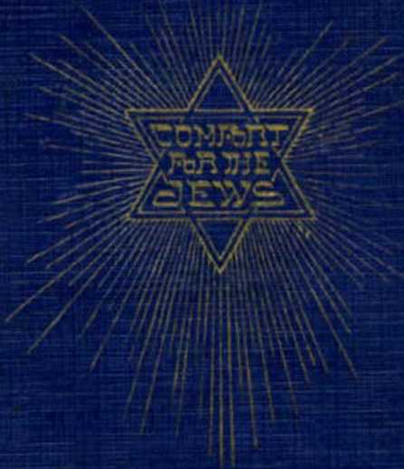
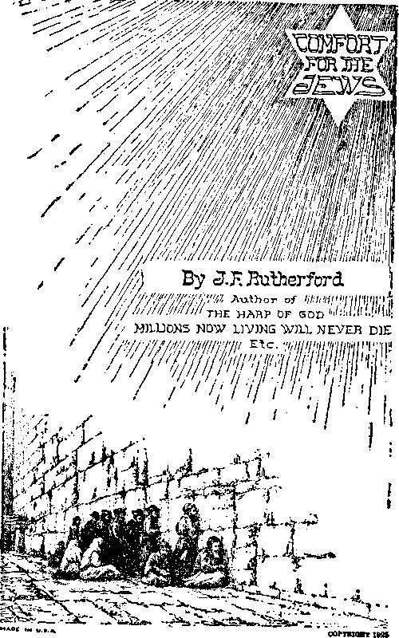
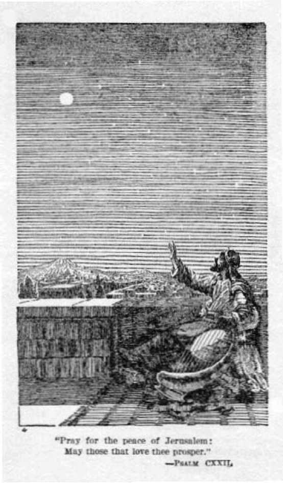

Founder OF PASTEURIZED MILK LABORATORY IN ME* PRESENTED TO HEALTH DEPARTMENT NEW YORK CITY MM
Alexandria Bay, B, T.
Casa Blanca
Aug. 14, 1925
Hon. Joseph F. Rutherford, 124 Columbia H'ghts.
Brooklyn, N. Y.
My dear Justice:-
Your address "Jews returning to Palestine" which was broadcasted, has just been brought to my attention.
My wife and I have been three times In the Holy Land. We are intensely interested in its reconstruction, being ardent Zionists.
Your Interpretation of the prophecies of the Bible strongly appeals to us - and confirms our own conviction.
You manifest a serious study of the Old Testament, which cannot help but convince of the Justice of my people in wanting again to possess the Holy Land.
Accept assurance of my personal appreciation of your liberal, generous viewpoint of our sacred cause.
Most sincerely yours
r[E rebuilding of Palestine is claiming the attention of Jews throughout the earth. Some of the Gentile world powers are outwardly favoring the movement but manifestly for selfish reasons.
JUDGE RUTHERFORD, known throughout the world as a friend of the Hebrew people, is vigorously supporting the claim of the Jews to the Holy Land. He is opposed to proselyting the Jews, holding that such is not only wrong but contrary to the Scriptures. His lectures to large audiences, which have been broadcast throughout the world, on “JEWS RETURNING TO PALESTINE”, have created an intense interest. There is a great demand for them in printed form. He has amplified these lectures and now presents them in book form. This volume will be of profound interest to Jews and Gentiles alike. It is the first unbiased presentation of the subject from the Scriptural viewpoint published.
The Publishers send forth this volume confident that it will do great good.
October, 1925
ARE the Jews the rightful owners and justly entitled to the full and uninterrupted possession of the land of Palestine? Will the Jews be restored to the possession of the land of Palestine, build there their permanent home and establish a government which shall beneficially affect other peoples of the earth?
If the evidence now available furnishes proof satisfactorily answering these questions in the affirmative, such answer should bring comfort to the heart of every real Jew. Not only that, but proof should stimulate Jews to greater zeal and activity in possessing and rebuilding Palestine. Not only Jews but Gentiles should have a keen interest in the question of the rebuilding of Palestine; because if the time has come for this to be done, it means the great transformation period in the affairs of the world. Candid and unbiased consideration of the evidence herein submitted is invited.
The land herein considered is that portion of the earth’s surface known as the Holy Land. It is called the Holy Land because it is the land chosen by Jehovah God as the theatre of the most momentous events in the history of man. When Jehovah, through Moses, gave the law to Israel he said therein concerning the land: “The land shall not be sold for ever: for the land is mine.” (Leviticus 25:23) That which is specially set aside by Jehovah for his purposes is holy; hence it is properly called the Holy Land.
Canaan is the name originally given to that land. It is the land which God promised to give to Abraham. Dr. Isaac Leeser, in his translation of the Pentateuch, makes first mention of the land of Palestine, using that word in Exodus 15:14. This reference is to that portion of the land then inhabited by the Philistines. In several places in the Holy Scriptures the word Palestine is used in reference to this land, but in each instance it is from the Hebrew word properly rendered Philistia.
Originally the land of Philistia meant that long strip of land lying along the coast of the Mediterranean sea. Through this strip of land was the road or highway between Egypt and Phoenicia and other northern countries. The name Palestine was gradually extended to the country further inland until it became the name applied to all the land of the Jews both west and east of the River Jordan. By common usage the word Palestine is now applied to all that portion of the earth’s surface known as the Holy Land. During the period of the reigns of David and Solomon Palestine, or the Holy Land, embraced all that land lying between the river of Egypt and the wilderness on the south, and Lebanon and the great River Euphrates on the north and east and the Mediterranean sea on the west. It embraces an area of upwards of 100,000 square miles. Before the desolation this land must have been very rich and productive, because it furnished support and maintenance for millions of people. That land, though made desolate, is capable of being brought again to such a high state of production that it can support many millions of people.
It is the Jews who lay claim to the land of Palestine and who desire to rebuild their homes there. The question then arises, Who is a Jew?
Jacob was a grandson of Abraham, the latter known as “the father of the faithful”. Jacob became the possessor of the birthright which descended from Abraham according to the promise which God made unto Abraham. On a certain occasion the Lord caused the name of Jacob to be changed to that of Israel. (Genesis 32: 28) When Jacob (now Israel) was old and about to die he called before him his sons that he might prophesy and tell them what should transpire in the future. At this time began the nation of Israel. “All these are the twelve tribes of Israel: and this is it that their father spake unto them, and blessed them; every one according to his blessing he blessed them.”—Genesis 49: 28.
Judah was the name of one of the sons of Jacob and he became the head of the tribe of Judah. All the descendants of Jacob (now Israel) were from that time forward properly called Israelites; but not all the descendants of Israel can be properly called Jews. All the religious hopes of the descendants of Israel (Jacob) from the time of his death rested in the tribe of Judah, because of the specific prophecy uttered by Jacob on his death-bed concerning the tribe of Judah, to wit: “Judah, thou art he whom thy brethren shall praise; thy hand shall be in the neck of thine enemies: thy father’s children shall bow down before thee. Judah is a lion’s whelp; from the prey, my son, thou art gone up: he stooped down, he couched as a lion, and as an old lion; who shall rouse him up ? The sceptre shall not depart from Judah, nor a lawgiver from between his feet, until Shiloh come; and unto him shall the gathering of the people be.”—Genesis 49: 8-10.
Here is the clear and positive statement that the one to whom the people shall be gathered, and the one who shall be their lawgiver, must be a descendant of the tribe of Judah. Jacob was a holy man of God, because he believed God and obeyed him. It was the power of God that moved Jacob to speak the words of this prophecy ; therefore the words must be taken as the words of Jehovah God. No one can please God unless he believes in the existence of Jehovah, and that he, Jehovah God, is the true and only God and is the rewarder of them that diligently seek him.
A Jew therefore is one who is the natural descendant of Jacob (Israel) and who has faith in the words uttered by Jacob concerning Judah. Such a one will have faith in all the promises which God has made to the Israelites through his prophets, who were holy men of old.
One may be a natural descendant of Israel, and even of the tribe of Judah, and yet not be a Jew. If he repudiates the promise God made concerning the gathering of the people unto the descendant of Judah he is as one who has renounced his allegiance to his native land and ceased to be a citizen thereof. If a citizen of England immigrates to the United States, renounces his allegiance to the king of England and becomes a citizen of the United States, he is no longer an Englishman. For the same reason if a descendant of Jacob, and even a direct descendant of Judah, renounces faith in the promises of God he thereby ceases to be a Jew. There are many natural descendants of Israel who have no faith in God and no faith in his Word. Such are not Jews within the meaning of the scripture.
There is a clergy class amongst the Israelites, even as there is such a class amongst the Gentiles. Few if any of those of the clergy class have real faith in the Word of God, because they have become wise in their own conceits, feeding themselves and not feeding the people, and have repudiated the Word of the Lord even as the Prophet Ezekiel foretold that they would do. (Ezekiel 34:1-10) There is a class of natural descendants from Israel, or Jacob, who believe that Jehovah is the only true and living God and that Moses and others of the holy prophets wrote the Holy Scriptures under the direction of the Almighty God. These are properly called Orthodox Jews. A statement of their faith follows:
I believe with a true and perfect faith (1) that God is the creator, governor, and maker of all creatures, and that he hath wrought all things; (2) that the Creator Is one, and that he alone hath been our God, is, and forever shall be; (3) that the Creator is not corporeal, not to be comprehended with any bodily properties, and that there is no bodily essence that can be likened unto him; (4) that nothing was before him, and that he shall abide forever; (5) that he is to be worshiped and none else; (6) that all the words of the prophets are true; (7) that the prophecies of Moses were true; that he was chief of all wise men that lived before him or ever shall live after him; (8) that all the law which at this day is found in our hands was delivered by God himself to our master, Moses; (9) that the same law is never to be changed, nor any other to be given us by God; (10) that God understandeth all the thoughts and works of men, as it is written in the prophets: “He fashioneth their hearts alike, he understandeth all their works”; (11) that God will recompense good to them that keep his commandments, and will punish them who transgress them; (12) that the Messiah is yet to come; and, although he retard his coming, yet “I will wait for him till he come”; (13) that the dead shall be restored to life when it shall seem fit unto God, the Creator, whose name be blessed and memory celebrated without end. Amen.
That class of natural descendants of Jacob who have Such faith in God and in his Word, as above stated, really are Jews; and they will receive comfort by now giving a careful consideration to the prophecies of God’s Word.
Prophecy means the foretelling of events that are to transpire before they do transpire. Prophecy can be understood and properly interpreted after its fulfilment or when in course of fulfilment. Prophecy contained in the Word of God was written by holy men of old as they were moved upon by the invisible power of Jehovah. Moses, Samuel, David, Isaiah, Ezekiel, Daniel and like men were used by the Almighty God to prophesy and make record thereof for the benefit of the people who might be on earth at the time of the fulfilment of these prophetic utterances. When prophecy is fulfilled we describe the facts of its fulfilment as physical facts.
As an illustration, Daniel prophesied that in the last days there would be great running to and fro and a great increase of knowledge. (Daniel 12: 4) Now we see the numerous means of rapid transit and the great increase of knowledge made manifest in modern inventions, and these are physical facts showing the fulfilment of prophecy.
The proof herein submitted, in support of the conclusions that shall be stated, is based upon prophecy written by holy men of old as recorded in the Holy Scriptures and upon the physical facts in fulfilment.
After the death of Solomon there was a rebellion of ten tribes of Israel, who formed the kingdom in the north part of Palestine with Jeroboam as their king. These were called Israelites, while those remaining loyal to Solomon’s son, Rehoboam, were called the house of Judah. The northern kingdom was the first to fall into the hands of the Babylonians, and later the house of Judah was carried away captive to Babylon. At the end of the period of seventy years Cyrus the king of Persia, under the direction of Jehovah, issued a proclamation in which it is stated: “The Lord God of heaven hath given me all the kingdoms of the earth; and he hath charged me to build him an house at Jerusalem, which is in Judah. Who is there among you of all his people? his God be with him, and let him go up to Jerusalem, which is in Judah, and build the house of the Lord God of Israel, (he is the God,) which is in Jerusalem. . . . Then rose up the chief of the fathers of Judah and Benjamin, and the priests, and the Levites, with all them whose spirit God has raised, to go up to build the house of the Lord which is in Jerusalem.”—Ezra 1: 2, 3, 5.
Thus it is shown that all the natural descendants of Jacob who had faith in God and in his promises exercised that faith by returning to Jerusalem. They were thereafter recognized under the general name of Israelites. Many of those who returned were from the various tribes, but the major portion of them were from the tribe of Judah. Therefore all were properly called Jews because of their faith in God’s promises prophetically uttered concerning the tribe of Judah.
Some erroneously contend that the Anglo-Saxon people, those who make up the population of Great Britain and the United States, are the offspring of the ten tribes of Israel who did not return; and that these are the favored ones of God. Such a contention is not supported by any scripture nor by any reasonable facts. Those who did not return under the decree of Cyrus automatically severed themselves from God’s people because of their lack of faith. The Anglo-Saxons do not have faith in the promises of God, particularly that promise made concerning the regathering of the people under Shiloh. Even though it should be found that the major portion of the ten tribes go to make up the population of the Anglo-Saxon countries they could not be the chosen people of God because of severing their allegiance from his people and because of their lack of faith in his Word. All of the ten tribes who forsook the promise of God automatically made themselves Gentiles.
The house of Israel became the national name of the ten tribes collectively. This name was later applied to all those who returned from captivity. The house of Judah is applied to all those who are the natural descendants of Judah and who have faith in the promise made concerning his tribe. Since the blessings are to come to the entire house of Israel through the seed of the tribe of Judah, all Israelites who have faith in God’s promise made concerning the Deliverer are properly called Jews.
It will be found that the Scriptures definitely teach that salvation is of the Jews because it is from the tribe of Judah that Shiloh the Messiah comes, he who shall be the Savior and Deliverer of mankind—the Jews first and thereafter the Gentiles. Without faith it is impossible to please God. Without faith in Jehovah and in his Word no one will ever receive a blessing at his hand.
THE rebuilding of Palestine is now beginning and is well under way. This is being done clearly in fulfilment of prophecy uttered as promises from Jehovah. This alone should command not only the respectful attention but the profoundest interest of everyone to believe that Jehovah is God. It was the great Jehovah speaking through men who had faith in him that foretold what we now see transpiring concerning Palestine. The privilege of living on earth at the time of the fulfilment of these prophecies cannot be overestimated. At once the Jew comes into prominence, and the history of the Jewish people becomes more thrilling than any book of fiction ever written.
Because the promises of God are not always fulfilled at the time when men think they should be fulfilled, many lose faith in his promises made. Let each one settle it in his mind for all time that when God Almighty makes a promise that promise is absolutely certain of fulfilment in God’s due time. Speaking through his prophet the Lord God says:
“I am the Lord, I change not. . . . Return unto me, and I will return unto you, saith the Lord of hosts.” (Malachi 3: 6, 7) “For I am God, and there is none else; I am God, and there is none like me. . . . My counsel shall stand, and I will do all my pleasure. . . . I have spoken it, I will also bring it to pass; I have purposed it, I will also do it.” (Isaiah 46:9-11) “So shall my word be that goeth forth out of my mouth; it shall not return unto me void; but it shall accomplish that which I please, and it shall prosper in the thing whereto I sent it.”—Isaiah 55:11.
Of all the peoples of the world the Jews have the greatest reason for faith in Jehovah God and his Word.
12
No other people were ever favored as were the Jews. God gave them an opportunity to magnify his name. All who magnify and honor the name of Jehovah God he honors. God will now make a name for himself in the earth. Let all the peoples, particularly the Jews, take heed.
There dwelt in the land of Ur of the Chaldees a man by the name of Terah with his son Abram. Terah took his son and his daughter-in-law and journeyed to Haran. When Abram was seventy-five years old and while residing in Haran God said unto him:
“Get thee out of thy country, and from thy kindred, and from thy father’s house, unto a land that I will show thee: and I will make of thee a great nation, and I will bless thee, and make thy name great; and thou shalt be a blessing: and I will bless them that bless thee, and curse him that curseth thee; and in thee shall all families of the earth be blessed.”—Genesis 12:1-3.
Not many generations had passed from the time of the creation of man. Moses afterward recorded that God created Adam the first man perfect, and gave him authority to multiply and fill the earth. Abram must have learned from his forefathers that Adam was made a perfect man and that for the disobedience of God’s law he was justly sentenced to death. He would understand that the children of Adam were begotten after this sentence and therefore, in harmony with David’s statement, were born in sin and shapen in iniquity. Abram knew that men had been dying and that the death of his forefathers was due to the sin of Adam. He must have understood the promise that God made unto him to mean that at some time and in some way God would provide a means for redeeming man from death and for the restoration to perfection of all who would obey the Lord’s righteous laws. Abram must have understood that in some manner he would be connected with this blessing of the people, because God promised as much. Abram had faith in God’s promise, and that pleased the Lord. Then later God promised Abram to give him the land and make him the father of many nations. Moses records this promise in these words:
"And the Lord said unto Abram, after that Lot was separated from him, Lift up now thine eyes, and look from the place where thou art, northward, and southward, and eastward, and westward: for all the land which thou seest, to thee will I give it, and to thy seed for ever. And I will make thy seed as the dust of the earth: so that if a man can number the dust of the earth, then shall thy seed also be numbered. Arise, walk through the land, in the length of it and in the breadth of it; for I will give it unto thee.”—Genesis 13:14-17.
At the time God made this promise Abram had no heir. Then, as is recorded by Moses, God appeared unto Abram in a vision and told him that he would have one.
"And he brought him forth abroad, and said, Look now toward heaven, and tell the stars, if thou be able to number them: and he said unto him, So shall thy seed be. And he believed in the Lord; and he counted it to him for righteousness.”—Genesis 15: 5,6.
Here is given proof that it was the faith of Abram that pleased God. It therefore follows that every Jew who is pleasing to God must have faith in the Lord. Those who have hope of receiving blessings from the Lord God must believe that his Word is true. Then the Lord God in order to further furnish Abram a basis for his faith made a covenant with him. It is written:
"And he said unto him, I am the Lord that brought thee out of Ur of the Chaldees, to give thee this land to inherit it. And he said, Lord God, whereby shall I know that I shall inherit it? And he said unto him, Take me an heifer of three years old, and a she goat of three years, and a ram of three years old, and a turtledove, and a young pigeon. And he took unto him all these, and divided them in the midst, and laid each piece one against another: but the birds divided he not. And when the fowls came down upon the carcases, Abram drove them away. And when the sun was going down, a deep sleep fell upon Abram; and, lo, an horror of great darkness fell upon him. And he said unto Abram, Know of a surety that thy seed shall be a stranger in a land that is not theirs, and shall serve them; and they shall afflict them four hundred years; and also that nation, whom they shall serve, will I judge: and afterward shall they come out with great substance. And thou shalt go to thy fathers in peace; thou shalt be buried in a good old age. But in the fourth generation they shall come hither again; for the iniquity of the Amorites is not yet full. And it came to pass, that, when the sun went down, and it was dark, behold, a smoking furnace, and a burning lamp that passed between those pieces. In the same day, the Lord made a covenant with Abram, saying, Unto thy seed have I given this land, from the river of Egypt unto the great river, the river Euphrates.”—Genesis 15: 7-18.
Subsequent evidence shows that here the Lord foretold that the descendants of Abram would spend a long time in Egypt and be oppressed there, and that then they would come out with great substance, and that his offspring should come again into the land of Canaan. These very thing did happen. Abram must have understood from this statement of the Lord that he (Abram) must die and that later God would raise him up out of death and make good to him his promise. Here also is the clear and definite statement as to the boundaries of the land that God promised to give Abram.
Fifteen years later God changed the name of Abram to that of Abraham, the latter meaning “father of nations”. On that occasion the Lord God said unto him:
“As for me, behold, my covenant is with thee, and thou shalt be a father of many nations. Neither shall thy name any more be called Abram, but thy name shall be Abraham; for a father of many nations have I made thee. And I will make thee exceeding fruitful, and I will make nations of thee, and kings shall come out of thee. And I will establish my covenant between me and thee, and thy seed after thee, in their generations, for an everlasting covenant, to be a God unto thee, and to thy seed after thee. And I will give unto thee, and to thy seed after thee, the land wherein thou art a stranger, all the land of Canaan, for an everlasting possession; and I will be their God. And God said unto Abraham, Thou shalt keep my covenant therefore, thou, and thy seed after thee, in their generations. This is my covenant, which ye shall keep, between me, and you, and thy seed after thee; Every man child among you shall be circumcised.”—Genesis 17:4-10.
When these promises were made by Jehovah to Abraham he had no children, yet he believed that the Lord would give him an heir. After God had thus tested the faith of Abraham for twenty-five years, and when Abraham was one hundred years old, Isaac was born. From time to time the Lord rewarded Abraham’s faith. This should be a lesson to every Jew; namely, that it is faith in the Lord and faithfulness to him that bring reward and blessings.
Faith means to have a knowledge of God’s Word and purposes, and then to confidently rely upon the promises of God and to deport oneself accordingly. It follows then that it is necessary for everyone to have a knowledge of the Word of God before he can have faith. It becomes necessary for every Jew who is to have a blessing and who is now living on the earth to obtain a knowledge of Jehovah’s plan and, knowing this, to rely upon it. This is faith.
Twenty-five years more passed, and the Lord put Abraham to a severe test. Of course Abraham loved his son Isaac and had reason to expect that the promised blessings of the people would come through Isaac. To test Abraham’s faith God directed him to take his son Isaac to Mount Moriah and there offer him as a burnt sacrifice. Abraham did not hesitate to obey, because of his complete confidence and faith in God. He journeyed to the appointed place and there built an altar, bound Isaac and laid him upon the altar, and took his knife to slay his only son.
What a test of faith to Abraham! And he bravely met the test. God rewarded his faith then and there, as is recorded:
"And the angel of the Lord called unto him out of heaven, and said, Abraham, Abraham: and he said, Here am I. And he said, Lay not thine hand upon the lad, neither do thou any thing unto him: for now 1 know that thou fearest God, seeing thou hast not withheld thy son, thine only son, from me. And Abraham lifted up his eyes, and looked, and, behold, behind him a ram caught in a thicket by his horns; and Abraham went and took the ram, and offered him up for a burnt offering in the stead of his son. And Abraham called the name of that place Jehovah-jireh: as it is said to this day, In the mount of the Lord it shall be seen. And the angel of the Lord called unto Abraham out of heaven the second time, and said, By myself have I sworn, saith the Lord, for because thou hast done this thing, and hast not withheld thy son, thine only son; that in blessing I will bless thee, and in multiplying I will multiply thy seed as the stars of the heaven, and as the sand which is upon the sea shore; and thy seed shall possess the gate of his enemies: and in thy seed shall all the nations of the earth be blessed: because thou hast obeyed my voice.” —Genesis 22:11-18.
Here not only did the Lord tell Abraham what he was about to do, but he bound his promise with his oath that he would multiply the seed of Abraham as the stars of heaven and as the sands upon the sea shore, and that in the seed of Abraham all nations of the earth shall be blessed; and he said he did this because of Abraham’s obedience.
When Abraham was 175 years old he died. God had promised him the land and had bound the promise with his oath; but Abraham never possessed a foot of it as his own. Does that mean that God’s promises are not true ? It does not. The time had not come for Abraham to enter into his inheritance. God’s promises are sure; therefore we must understand that it is the purpose of the Lord at some future time to raise Abraham out of death and give to him, and to his offspring who have the faith of Abraham, all the land that he promised him. That time is at hand, as subsequent facts will show. Hence every Jew should take comfort therefrom.
Isaac begat Jacob, who by divine provision and by contract rightfully succeeded to the promise or birthright which God had made unto Abraham. (Genesis 25:23, 31-33) Jacob was the father of the twelve patriarchs, or heads of the twelve tribes. The Lord God renewed the Abrahamic promise to Jacob, as it is written:
"And, behold, the Lord stood above it, and said, I am the Lord God of Abraham thy father, and the God of Isaac: the land whereon thou liest, to thee will I give it, and to thy seed; and thy seed shall be as the dust of the earth, and thou shalt spread abroad to the west, and to the east, and to the north, and to the south: and in thee and in thy seed shall all the families of the earth be blessed. And, behold, I am with thee, and will keep thee in all places whither thou goest, and will bring thee again into this land; for I will not leave thee, until I have done that which I have spoken to thee of.”—Genesis 28:13-15.
Jacob’s beloved son Joseph was sold into Egypt and there became a great ruler. Later Jacob and his sons went to reside in Egypt. Jacob drew near unto death. This time marked the beginning of the nation of Israel, because Jacob’s name was now Israel by order of the Lord. At that time, under the direction of the Lord, Jacob called his sons to him and prophesied unto them. Here it was that the Abrahamic promise took on a more definite form. Here the Lord showed that his intention is that the blessing should come particularly through the seed of Judah; hence the truth of the statement that “salvation is of the Jews”. By this is meant that those who have the faith of Abraham and who have full faith in the promises of God shall be blessed and be instruments of blessing. It was at this time that God said concerning Judah: “The sceptre shall not depart from Judah, nor a lawgiver from between his feet, until Shiloh come; and unto him shall the gathering of the people be.”—Genesis 49:10.
Shiloh means tranquil; that is, to be secure, happy and prosperous. It is one of the names denoting the Messiah, the one clothed with power and authority as God’s representative to carry out his purposes concerning man.
This prophecy clearly proves that the blessings which God promised to come through the seed of Abraham will be realized only when Messiah shall come, that the Messiah constitutes the seed of Abraham according to the promise, and that this seed comes particularly through the line of Judah. But before these promised blessings could come the Jews must pass through a long line of trying experiences, and these experiences ultimately will work out good for the Jews and for the other peoples of the earth who observe them and who are properly exercised thereby.
With all their fiery experiences through the centuries past it is remarkable how the Jews have kept themselves separate and distinct from other peoples. Let each Jew take courage now and know that the promises that the Lord God made to Abraham, to Isaac, to Jacob and to the Israelites through the prophets are absolutely certain of fulfilment. The time draws near when the Jews shall appreciate the fact that the fiery trials through which they have passed will work out to their good, and not to their good only, but to that of all others of peoples on earth who exercise the faith of Abraham.
AFTER the death of Jacob his sons continued to reside in the land of Egypt. While Joseph lived and ruled, the Israelites were well treated and prospered. But the time had come for a change.
“And Joseph said unto his brethren, I die: and God will surely visit you, and bring you out of this land unto the land which he sware to Abraham, to Isaac, and to Jacob. And Joseph took an oath of the children of Israel, saying, God will surely visit you, and ye shall carry up my bones from hence. So Joseph died, being an hundred and ten years old; and they embalmed him, and he was put in a coffin in Egypt.” (Genesis 50:24-26) “Now there arose up a new king over Egypt, which knew not Joseph.”—Exodus 1: 8.
This new Pharaoh, the king of Egypt, dealt wickedly with the Israelites. He caused the babes to be killed. Moses was born; and the Lord miraculously preserved him and caused him to be nourished and brought up in the house of the king. Moses, learning of the promises made to his forefathers and seeing his brethren persecuted and ill-treated, rather than to be called the son of the daughter of Pharaoh and enjoy the pleasures of the great kingdom, chose to suffer affliction with his own people. He forsook Egypt and sought to know and to do the will of God.
The afflictions of the Israelites increased under the wicked rulership of the Egyptian king. God called to Moses and said:
“I am the God of thy father, the God of Abraham, the God of Isaac, and the God of Jacob. . . . And the Lord said, I have surely seen the affliction of my people which are in Egypt, and have heard their cry by reason of their taskmasters; for I know their sorrows;
20
and I am come down to deliver them out of the hand of the Egyptians, and to bring them up out of that land unto a good land and a large, unto a land flowing with milk and honey; unto the place of the Canaanites, and the Hittites, and the Amorites, and the Perizzites, and the Hivites, and the Jebusites. Now therefore, behold, the cry of the children of Israel is come unto me: and I have also seen the oppression wherewith the Egyptians oppress them. Come now, therefore, and I will send thee unto Pharaoh, that thou mayest bring forth my people, the children of Israel, out of Egypt.”—Exodus 3: 6-10.
Then the Lord spoke unto Moses and told him to appear before the king of Egypt and demand the release of the Israelites. The Lord had appeared unto Abraham, Isaac and Jacob by the name of God Almighty; but now for the first time he appears as Jehovah, and he says to Moses:
"And I have also established my covenant with them, to give them the land of Canaan, the land of their pilgrimage, wherein they were strangers. And I have also heard the groaning of the children of Israel, whom the Egyptians keep in bondage; and I have remembered my covenant.”—Exodus 6:4, 5.
Pharaoh continued to increase the burdens of the Israelites. God visited the various plagues upon the Egyptians. Still the king refused to permit Israel to go. Then came the plague of the first-borns. This was the time of the institution of the Passover. It marked the beginning of time with the Israelites. The Lord commanded that on the tenth day of the first month each family should take a lamb which must be without blemish, a male of the first year. The lamb should be kept up until the fourteenth day of the same month, on which day it should be killed and the blood of the lamb sprinkled on the two sideposts and the lintels of the door of the house of the family. Then the lamb should be roasted with fire and eaten with unleavened bread and bitter herbs; and the family eating thereof should have their loins girded, shoes on their feet and staff in hand; that at midnight of that day, when the angel of the Lord should pass through the land of Egypt and smite with death the first-born both of man and beast in Egypt, the first-born of the Israelites would be spared provided they had sprinkled the blood upon the door as directed.
The families of Israel obeyed this command, and thus showed their faith in God’s promise; and their first-born were spared from death. On that fateful night the Lord smote with death the first-born of the households of Egypt, from the king to the humblest servant. There was a great cry in Egypt, and now the king and the people thrust out the Israelites. The Israelites borrowed from the Egyptians their silver, their gold and their raiment. The descendants of Israel, or Jacob, had now grown to upwards of 600,000 people; and these on foot marched to the Red Sea. When the king had bemoaned the fate of his first-born for a time, then he summoned his army and followed after the Israelites to slay them.
When Moses and Aaron had appeared before the king and requested that the Israelites be permitted to go and worship their God, Pharaoh said: “Who is the Lord, that I should obey his voice to let Israel go? I know not the Lord, neither will I let Israel go.” (Exodus 5: 2) When the Egyptians had oppressed hard the Israelites God said unto Moses: “And the Egyptians shall know that I am the Lord, when I have gotten me honour upon Pharaoh, upon his chariots, and upon his horsemen.” (Exodus 14:18) God then went before the camp of Israel and shielded them by a cloud and pillar of fire. The Lord commanded Moses to stretch forth his hand over the sea; and by a strong east wind the Lord caused the sea to go back so that the Israelites passed through the Red Sea on dry land. When the Egyptians started to follow after them they were engulfed in the sea and were destroyed. God thus demonstrated to the Israelites that he was their God, their shield and their protector.
When they were safely on the other side of the sea Moses and the children of Israel sang a song of praise unto Jehovah: “The Lord is my strength and song, and he is become my salvation: he is my God, and I will prepare him an habitation; my father’s God, and I will exalt him. The Lord is a man of war: the Lord is his name.”—Exodus 15: 2, 3.
The Lord Jehovah now began to teach the Israelites lessons of faith. Their miraculous deliverance from the hands of their enemies should have been sufficient to establish their faith in God. Faith and faithfulness is one of the hardest lessons that man has to learn. According to one’s faith is his reward and blessing.
IN THE third month after the Israelites were delivered from the Egyptians they came to the wilderness of Sinai and pitched their camp at the base of Mount Sinai. At the invitation of Jehovah Moses went up into the mountain that God might communicate with him and arrange for the ratification of the covenant which had been made in Egypt.
A covenant is a solemn agreement made between two or more parties upon a sufficient consideration, in which both parties agree to do or not to do certain thing. In the law covenant ratified at Mount Sinai God promised to do certain thing, and the Israelites agreed to do all that God proposed unto them. The Lord spoke through Moses, the mediator for Israel. God there promised the Israelites that if they would be faithful to their agreement they should be unto him aholy nation. (Ex. 19:3-8) :
“And Moses went up unto God, and the Lord called unto him out of the mountain, saying, Thus shalt thou say to the house of Jacob, and tell the children of Israel: Ye have seen what I did unto the Egyptians, and how I bare you on eagles’ wings, and brought you unto myself. Now therefore, if ye will obey my voice indeed, and keep my covenant, then ye shall be a peculiar treasure unto me above all people: for all the earth is mine: and ye shall be unto me a kingdom of priests, and an holy nation. These are the words which thou shalt speak unto the children of Israel.”
Then the Lord told Moses to prepare the people, for on the third day thereafter he would come down and give unto them the law. The people were assembled at the foot of Mount Sinai; and on the morning of the third day, amidst thunders and lightnings and while thick clouds hung over the mountain, the voice of a trumpet 24 sounded exceeding loud and all the mountain quaked so that the people trembled with fear; and then the Lord spoke unto them. Amidst these great convulsions of the earth and the elements, God through Moses gave unto the Israelites the law, the fundamental portion of which is set out in the Scriptures as follows:
“And God spake all these words, saying, I am the Lord thy God, which have brought thee out of the land of Egypt, out of the house of bondage.
“Thou shalt have no other gods before me.
“Thou shalt not make unto thee any graven image, or any likeness of any thing that is in heaven above, or that is in the earth beneath, or that is in the water under the earth: thou shalt not bow down thyself to them, nor serve them: for I the Lord thy God am a jealous God, visiting the iniquity of the fathers upon the children unto the third and fourth generation of them that hate me; and shewing mercy unto thousands of them that love me, and keep my commandments.
“Thou shalt not take the name of the Lord thy God in vain; for the Lord will not hold him guiltless that taketh his name in vain.
“Remember the sabbath day, to keep it holy. Six days shalt thou labour, and do all thy work: but the seventh day is the sabbath of the Lord thy God: in it thou shalt not do any work, thou, nor thy son, nor thy daughter, thy manservant, nor thy maidservant, nor thy cattle, nor thy stranger that is within thy gates: for in six days the Lord made heaven and earth, the sea, and all that in them is, and rested the seventh day: wherefore the Lord blessed the sabbath day, and hallowed it.
“Honour thy father and thy mother; that thy days may be long upon the land which the Lord thy God giveth thee.
“Thou shalt not kill.
“Thou shalt not commit adultery.
“Thou shalt not steal. * .
“Thou shalt not bear false witness against thy neighbour.
“Thou shalt not covet thy neighbour’s house, thou shalt not covet thy neighbor’s wife, nor his manservant, nor his maidservant, nor his ox, nor his ass, nor anything that is thy neighbor’s.
“And all the people saw the thunderings, and the lightnings, and the noise of the trumpet, and the mountain smoking: and when the people saw it, they removed, and stood afar off. And they said unto Moses, Speak thou with us, and we will hear: but let not God speak with us, lest we die. And Moses said unto the people, Fear not: for God is come to prove you, and that his fear may be before your faces, that ye sin not. And the people stood afar off: and Moses drew near unto the thick darkness where God was. And the Lord said unto Moses, Thus thou shalt say unto the children of Israel, Ye have seen that I have talked with you from heaven. Ye shall not make with me gods of silver, neither shall ye make unto you gods of gold. An altar of earth thou shalt make unto me, and shalt sacrifice thereon thy burnt offerings, and thy peace offerings, thy sheep, and thine oxen: in all places where I record my name I will come unto thee, and I will bless thee. And if thou wilt make me an altar of stone, thou shalt not build it of hewn stone: for if thou lift up thy tool upon it, thou hast polluted it. Neither shalt thou go up by steps unto mine altar, that thy nakedness be not discovered thereon.”— Exodus 20:1-26.
For a record of the divers statutes and ordinances which God gave to Israel the reader is referred to Exodus, chapters twenty-one and twenty-two.
But many ask: Why should God make a covenant with the people of Israel ? The answer is: God had now organized the Israelites into a nation for his purposes. He had promised that through the line of Judah should come the great Messiah, to whom the people should be gathered, and who would administer to them the blessings according to the promise which God had made to Abraham. Of course God knew the weaknesses of men and knew that the Israelites would now be the special target of the enemy; but that the law would be unto the Jews a teacher or schoolmaster to keep them separate and distinct from other peoples of the earth and prepare them to receive the great Messiah in due time. The law also served to teach them the real significance of the sacrifices which they were caused to perform and which in due time they would fully understand. The sacrifices of animals were merely types and shadows, showing that better thing would follow.
It is observed that of all thing stated in the law that which is made the most prominent is that the people should worship Jehovah God and should have no other gods beside him. Why is that feature of the law made so prominent? If Jehovah God is all powerful and is the personification of love, why should it be necessary for him to make such a provision in his law? Did Jehovah God make this law for a selfish purpose, that he might have the worship of the people? No; God did not make this law for a selfish purpose. He made it for the special benefit of the Jews and also for the ultimate benefit of all men. The proper answers to the above questions are very essential to an understanding of God’s specific dealings with Israel and of the general blessings he purposes for all mankind.
Enemy's Organization
It is recorded in the book of Job (38: 4-7) that when God laid the foundations of the earth as a habitation for man the Morning Stars sang together for joy. The Holy Scriptures show that the term Morning Stars refers to two mighty beings of heaven; namely, Michael (the Logos) and Lucifer. Here something is said about Lucifer and later herein something will be said concerning the Logos. Lucifer proved to be the disloyal son of God, while the Logos is the “Faithful and True”. Since this prophecy refers to the laying of the foundations of the earth as a place for man’s habitation, it is necessary to examine here the account of the creation of man.
The Genesis account written by Moses under inspiration of God discloses that when God had created the earth he made a portion thereof exceedingly beautiful and called it Eden. He planted a garden in the eastern part of Eden, and then made man and woman and placed them in this garden of the Lord. (Genesis 2:8-15) God clothed man with power and authority to produce his own species and to fill the earth in due time.
Lucifer was appointed to the high position of overlord of man. He was assigned to the duty of overseeing man and of carrying out God’s purposes concerning humanity. Lucifer therefore occupied a confidential or fiduciary relationship toward God and a position of confidence and trust on behalf of man. The Prophet Ezekiel records concerning Lucifer that he was “in Eden the garden of God”. The same prophet further says concerning Lucifer: “Thou art the anointed cherub that covereth; and I have set thee so: thou wast upon the holy mountain of God; thou hast walked up and down in the midst of the stones of fire. Thou was perfect in thy ways from the day that thou wast created, till iniquity was found in thee.” (Ezekiel 28:14,15) The title “covering cherub” used herein shows that Lucifer occupied a position of trust and authority.
The greatest crime that can be committed is to wilfully betray a trust, resulting in injury to another. Such is an act of treason. It makes the perpetrator of the wrong a wicked and nefarious creature. Lucifer was guilty of this very thing. He knew that man was so created that he must worship a higher being. He knew that man would enjoy the beauties of Eden and worship Jehovah God, his Creator and Benefactor. He also knew that man was clothed with authority to bring forth children and fill the earth with a race of people. Lucifer became ambitious that he might have from man the worship to which God alone was justly entitled. He reasoned that if he could turn man away from God, in due time Adam and Eve and all their offspring would worship Lucifer, and that then he would be like the Most High. God’s prophet says concerning Lucifer:
“How art thou fallen from heaven, 0 Lucifer, son of the morning! how art thou cut down to the ground, which didst weaken the nations! For thou hast said in thine heart, I will ascend into heaven, I will exalt my throne above the stars of God: I will sit also upon the mount of the congregation, in the sides of the north: I will ascend above the heights of the clouds; I will be like the Most High.”—Isaiah 14:12-14.
To accomplish his selfish and wicked purpose Lucifer resorted to fraud, deceit and lying, which resulted in murder. Therefore he was a liar and a murderer from the beginning of man’s history. He employed the serpent in Eden through which to speak to Eve in order to deceive her. God had told Adam and Eve that growing upon the trees of Eden there were certain fruits which they must not eat. Lucifer, in his wily and subtle way of deceiving man, approached Eve first and said: “Yea, hath God said, Ye shall not eat of every tree of the garden?” And the woman replied: “We may eat of the fruit of the trees of the garden: but of the fruit of the tree which is in the midst of the garden, God hath said, Ye shall not eat of it, neither shall ye touch it, lest ye die.”—Genesis 3:1-3.
Now Lucifer knew that in order to succeed in his wicked purposes he must make God appear to be a liar and that he, Lucifer, must appear as a benefactor. Hence he replied to Eve:
“Ye shall not surely die: for God doth know that in the day ye eat thereof, then your eyes shall be opened; and ye shall be as gods, knowing good and evil. And when the woman saw that the tree was good for food, and that it was pleasant to the eyes, and a tree to be desired to make one wise, she took of the fruit thereof, and. did eat; and gave also unto her husband with her; and he did eat.”—Genesis 3: 4-6.
Thus yielding to the seductive influence of Lucifer, operating through the serpent, Eve ate of the fruit in violation of the law of God; and Adam joined her in the transgression.
Jehovah God must be consistent. He cannot deny himself. Having announced the penalty for the violation of his law he must see to it that the law, when violated, must be enforced. By the terms of that judgment (Genesis 3:14-24) it is provided that henceforth there should be enmity between the seed of the woman and the seed of the serpent; that in God’s due time the seed of the woman should bruise the serpent’s head; that the woman should bring forth her children in sorrow; that man should earn thereafter his bread in the sweat of his face until he should return to the dust, whence God had taken him. To enforce this judgment God drove Adam and Eve out of Eden and prevented them from returning, lest they should eat of the tree of life and live for ever. Outside of Eden, feeding upon the unfinished fruits of the earth, which were poisonous, gradually they went into death.
The name Lucifer means “Light-bearer”; and now since he had become wicked God changed his name so that thereafter he was, and has been, known by four different names: Serpent, Dragon, Satan and the Devil. Each one of these names has a special significance. Serpent means deceiver, and he has sought to deceive everyone that tried to do right. Dragon means devourer, and he has attempted to devour everyone that has tried to walk in the way of righteousness. Satan means opposer or adversary, and he has opposed everything of righteousness. Devil means slanderer, and he has made it his chief business to slander God and every one that has tried to be in harmony with God. The sentence of God against him is that in due time he shall be destroyed. The prophets Ezekiel and Isaiah both make this clear:
“Thine heart was lifted up because of thy beauty; thou hast corrupted thy wisdom by reason of thy brightness; I will cast thee to the ground, I will lay thee before kings, that they may behold thee. Thou hast defiled thy sanctuaries by the multitude of thine iniquities, by the iniquity of thy traffic; therefore will I bring forth a fire from the midst of thee; it shall devour thee; and I will bring thee to ashes upon the earth, in the sight of all them that behold thee.” (Ezekiel 28:17,18) “Yet thou shalt be brought down to hell, to the sides of the pit.”—Isaiah 14:15.
Of course God could have destroyed Satan the Devil at once, but his wisdom provided a more effectual course. Knowing that the wicked course Satan would take would test the faith of every righteous one God permitted him to be used to try the faith of men. Thus a way was open where man could exercise his own free will. He could choose to follow evil or choose to follow righteousness. The enemy, Satan, marks the course of evil. God points out the way of righteousness and good. Every man must have an opportunity to exercise his own free will-power; and if he follows evil the consequences will be disastrous; but if good he will receive God’s blessings.
From the time of Eden until now Satan has opposed every effort on the part of men or peoples to do that which is right. Those who have attempted to obey God have been the special targets of the Devil. When Abel would serve God, the Devil induced Cain to murder his brother. From then till now Satan the enemy has planted murder in the hearts of men and caused them to kill one another and to attempt the destruction of every one who believes and serves God.
The enemy Satan the Devil seduced a number of the angels of heaven and turned them away from God, until
there came to be a great host of devils of whom he is the chief. He proceeded to set up his organization, composed of a wicked heaven and a wicked earth. Heaven means the invisible ruling realm and power, while earth has reference to the organization of the governments of men on earth.
In Noah’s day Satan the enemy had seduced the people and turned them away from God, and none except Noah and his family remained true and faithful. God brought the great deluge upon the earth and destroyed all the creatures on earth except Noah and his family, thereby expressing his displeasure with wickedness, and demonstrated his superior power to that of others that mankind might have faith in him and know that he is the living God. In Abraham’s day few people had any faith in God. Abraham was one of the faithful, and for this reason he received God’s approval and favor.
The Scriptures disclose that it has ever been the policy of Satan the enemy to induce the people to worship him either directly or indirectly • and that if he could not induce them to worship him directly, then he caused them to worship graven images or idols or to worship anything except Jehovah God. Satan the enemy organized all the nations outside of the offspring of Abraham and induced them to worship him or some of his representatives.
When the Israelites were domiciled in Egypt, every nation and people under the sun aside from the Israelites were under the control and influence of Satan the enemy. Pharaoh was Satan’s chief representative on earth. The Scriptures show that Pharaoh was a type of Satan, and that Egypt was a type of the wicked world under Satan. The great persecution of the Israelites in Egypt was due to the fact that Israel was the only people of God, and that Satan the enemy sought to destroy them because God had declared that the seed of promise should bruise Satan’s head in due time. The Lord God miraculously delivered the Israelites from Egypt, and thus demonstrated that he is all-powerful and able to save them to the uttermost.
God led Israel up to Mount Sinai and there gave them the law by which they should be governed, and which would serve as a protection to them against the wiles of the enemy Satan. The law also served as a schoolmaster to teach them and lead them in the way that they should go as long as they would obey the law. The purpose of the Lord was to thus lead them until the coming of the great Messiah, to whom the people should be gathered and blessed, according to his promise. But the people soon fell into the habit of offering their sacrifices unto devils. And then God spoke unto Moses and commanded that they should offer their sacrifices unto the Lord: “And they shall no more offer their sacrifices unto devils, after whom they have gone a whoring. This shall be a statute for ever unto them throughout their generations.”—Leviticus 17:7.
And now the question is answered why God commanded the people that they should have no other god beside him. The answer is: Because he saw how the enemy Satan had turned all the nations and peoples into the course of wickedness, and he knew that the only safeguard for the Israelites was for them to remain faithful to Jehovah God. He commanded that they should worship him as the only true God; and this command was for their good. It was the love of God for the people of Israel that induced him to give them the law.
The Scriptures abundantly testify to the fact that there are many pure and holy angels in heaven who are loyal to Jehovah God. These form the invisible part of God’s organization, which organization is righteous. When the people of Israel were organized into a nation and entered into a covenant with Jehovah God, that people and nation became a part of God’s organization. Zion is one of the names applied to God’s organization. Israel is often mentioned in the Scriptures under the name Zion. The reason for this is that Israel for a long time was the visible part of God’s organization on earth.
David was the beloved king of Israel. He was a man after God’s own heart. His name means beloved. He was a type of the great Messiah to come. His son Solomon was a type of the glorified Messiah reigning in riches and glory. A city is often used as a symbol of an organization or government. It is written in 1 Kings 8:1: “Then Solomon assembled the elders of Israel, and all the heads of the tribes, the chief of the fathers of the children of Israel, unto king Solomon in Jerusalem, that they might bring up the ark of the covenant of the Lord out of the city of David, which is Zion.”
The Scriptures declare that God dwells in Zion, as it is written in Psalms 9:11 and 132:13: “Sing praises unto the Lord, which dwelleth in Zion: declare among the people his doings.” “For the Lord hath chosen Zion: he hath desired it for his habitation.” Thus it is shown that Zion is the habitation of Jehovah. “Out of Zion, the perfection of beauty. God hath shined.”—Psa. 50: 2.
Israel, when in harmony with God being the only government on earth with which the Lord dealt, is properly called Zion because a part of his organization. Being the only part of God's visible organization, it is easily understood why God hedged about the Israelites with his perfect law. Israel was favored above any other people on earth because God chose them for his people.
The great lesson that God was teaching to the Israelites, which all men must ultimately learn, is this, to wit: That Satan the enemy is the wicked one; that his course leads to destruction and that those who wilfully follow him will in due time be destroyed : that God is the great Righteous One, the God of wisdom, justice, love and power, and that he has provided the way to life and eternal blessedness for all those who will obey him and follow righteousness. The Lord has thus expressed it through his prophet in Psalm 145: 20: “The Lord pre-serveth all them that love him: but all the wicked will he destroy.”
The nation of Israel therefore was used for more than 1800 years as examples to teach a great lesson to humanity. All the way Satan the enemy sought to blind Israel and turn that people away from God. Now the time has come for the Jews to see that God’s gracious purpose in dealing with them lovingly and patiently was for their own benefit; and not for them only but that all the families of the earth might learn the important lesson that righteousness alone exalteth the people.
Therefore the Israelites, the Jews, during the time of God’s dealing with them were a typical people. Their law was typical, foreshadowing some better thing to come. Moses plainly says that he was a type of the great Messiah: “The Lord thy God will raise up unto thee a Prophet from the midst of thee, of thy brethren, like unto me; unto him ye shall hearken;... I will raise them up a Prophet from among their brethren, like unto thee, and will put my words in his mouth; and he shall speak unto them all that I shall command him.” (Deuteronomy 18:15,18) Isaiah prophesied that he and his sons were types of thing future: “Behold, I and the children whom the Lord hath given me are for signs and for tokens [types] in Israel, from the Lord of hosts who dwelleth on Mount Zion.” (Isaiah 8:18, Leeser) To the same effect Zechariah prophesied that God intended Israel as a typical people.—Zechariah 3: 8.
Seeing then that the people of Israel were used to make pictures foreshadowing better thing in the future all peoples, whether Jew or Gentile, who love righteousness and who desire to live, should study the law of Israel and God’s dealings with that people with the keenest interest. It will be found that the thing which transpired unto Israel were for examples for the special benefit of those who should be living on earth at the end of the world and at the time when God’s favor would return to the Jews, even in the time in which we are now living. When we see and understand that the Devil for many centuries has had an organization, that he is the opposer of God and righteousness, and that the nation of Israel for a long time was a part of God’s organization, it is easy to understand why Satan would busy himself in trying to overreach and destroy the nation of Israel. Thus we are enabled to understand many things concerning the history of Israel which are otherwise not understandable. It is also apparent that any one who falls to the wiles of the Devil must lose God’s favor and that any one who will receive the favor of God must turn away from the Devil and from his organization and diligently seek the Lord and obey him. God never put an evil thought into any man’s mind. He never induced man to do an evil act. Inasmuch as Satan the Devil is the enemy of God and is the great evil one, it is absolutely certain that he has injected into men’s minds the evil thoughts and evil desires that have led to all the evil deeds.
From the time that Cain murdered Abel to this very hour Satan the enemy has been the one who has induced all the murders and other wicked deeds of humankind. “Righteousness exalteth a nation: but sin is a reproach to any people.” (Proverbs 14: 34) The facts show that God offered the nation of Israel an opportunity to follow righteousness and to be exalted above all others. (Exodus 19: 5, 6) They yielded to the evil one, fell into sin and became a reproach. Thus the history of Israel stands as a monument, teaching a lesson to all nations and peoples of earth.
GOD established with Israel the true religion; namely, that they should worship Jehovah as the only true God and have no other gods beside him.
Satan the enemy, the chief of devils and the invisible ruler of the other nations, established with those nations the false religion; namely, the worship of devils.
God erected a shield for the protection of Israel, by the terms of the law which he gave them. That law provided severe punishment for any one who indulged in devil worship. (Exodus 22:18; Leviticus 20:26,27; Deuteronomy 18: 9-14) The experiences through which Israel passed were primarily to demonstrate to them the necessity of loyalty and faithfulness to Jehovah. The evil one, Satan, hated the loyal Jews and sought to destroy them in whatsoever way he could. His constant effort was to turn them away from Jehovah God. During the time of Joshua the Israelites were faithful to God. Shortly after his death they began to forget God and fell into sin.
“Abd the children of Israel did evil in the sight of the Lord, and served Baalim: and they forsook the Lord God of their fathers, which brought them out of the land of Egypt, and followed other gods, of the gods of the people that were round about them, and bowed themselves unto them, and provoked the Lord to anger. And they forsook the Lord, and served Baal and Ashtaroth. And the anger of the Lord was hot against Israel, and he delivered them into the hands of spoilers that spoiled them, and he sold them into the hands of their enemies round about, so that they could not any longer stand before their enemies.”—Judges 2:11-14.
“And when the Lord raised them up judges, then the Lord was with the judge, and delivered them out of the
hand of their enemies all the days of the judge: for it repented the Lord because of their groaning by reason of them that oppressed them and vexed them?’ (Judges 2:18) Then the Lord permitted the heathen to dwell near Israel to test them.
"Now these are the nations which the Lord left, to prove Israel by them, even as many of Israel as had not known all the wars of Canaan; . . . And the children of Israel dwelt among the Canaanites, Hittites, and Amorites, and Perizzites, and Hivites, and Jebusites; and they took their daughters to be their wives, and gave their daughters to their sons, and served their gods. And the children of Israel did evil in the sight of the Lord, and forgat the Lord their God, and served Baalim and the groves.”—Judges 3:1, 5-7.
Again the Lord permitted the Israelites to have great tribulation, and when they cried unto him again he heard their cry and delivered them. (Judges 3: 9,10) Time and time again the Israelites were unfaithful to their covenant, and time and again were they punished therefor, and when they cried unto the Lord he heard them and delivered them.—Judges 4:1-15; 6: 7.
Then the Lord raised up Judge Samuel, who was true and faithful to the Lord, and because of his faithfulness the Lord delivered Israel out of the hand of their enemies during all the days of the judge.
Be it noted that whenever Israel was faithful to the Lord he always delivered them from their enemies. Without doubt he did this to teach them that he was not only their great God but their true and only friend and that Satan was and is their enemy. Some marked demonstrations of God’s loving kindness to Israel are shown in the instances recorded in the Scriptures. A few of these are here recounted:
Gideon, who served God and who prayed unto God for help, with a little band of 300 men put to flight a host of 200,000 Midianites; God causing them to slay each other. Without a doubt the Lord thus showed his favor because Gideon obeyed the voice of Jehovah and defied the Devil and his organization. (Judges 6:11-40; 7: 1-25) In this great conflict Gideon and his little company of 300 did nothing but hold high their lamps and cry out: “The sword of the Lord and of Gideon.” The Lord God did the rest and caused the destruction of the Midianites.
When Jehoshaphat was king the combined armies of Ammon, Moab and mount Seir came up against the Israelites. Jehoshaphat knew that he could not withstand the assault of this great enemy. He gathered the Israelites before the temple at Jerusalem, to wit, the men, women and children. Standing before the temple,, and as the mouthpiece of Israel, Jehoshaphat prayed to Jehovah God thus: “0 Lord God of our fathers, art not thou God in heaven? and rulest not thou over all the kingdoms of the heathen ? and in thine hand is there not power and might, so that none is able to withstand thee? . . . And all Judah stood before the Lord, with their little ones, their wives, and their children.”—2 Chronicles 20: 6,13.
Then the Lord heard the prayer of Jehoshaphat and he caused Jehaziel, a son of the tribe of Levi, to prophesy and to tell Jehoshaphat to be not afraid nor dismayed by reason of the great multitude, but that he should go out to battle and the enemy should fall. He said: “Ye shall not need to fight in this battle: set yourself, stand ye still, and .see the salvation of the Lord with you, O Judah and Jerusalem; fear not, nor be dismayed; tomorrow go out against them: for the Lord will be with you.”—2 Chronicles 20:17.
And then under the instructions of the Lord Jehoshaphat appointed singers unto the Lord who should praise, the beauty of holiness as they went out before the army and praise the Lord for his mercy and goodness. Next day they went out to battle; and as the enemy approached, these singers began to sing the praises of the Lord. “And when they began to sing and to praise, the Lord set ambush-ments against the children of Ammon, Moab and mount Seir, which were come against Judah; and they were smitten.”—Verse 22.
On another occasion, to wit, the fourteenth year of the reign of King Hezekiah, Sennacherib king of Assyria came to give battle against the city of Jerusalem. The king of Assyria was an arrogant, haughty heathen who worshiped the Devil. This arrogant heathen king with his great army sent messengers unto Hezekiah and defied Almighty God. When Hezekiah heard this message he rent his clothes and covered himself with sackcloth and ashes and went down to the house of the Lord. Hezekiah was greatly in fear and in trouble and he sent his servant who came unto Isaiah the prophet. And Isaiah prophesied:
“Thus shall ye say unto your master, Thus saith the Lord, Be not afraid of the words that thou hast heard, wherewith the servants of the king of Assyria have blasphemed me. Behold, I will send a blast upon him, and he shall hear a rumour, and return to his own land: and I will cause him to fall by the sword in his own land.”—Isaiah 37:6,7.
Again the king of Assyria sent messengers to Hezekiah with a letter, attempting to weaken the faith of Hezekiah in Jehovah God.
“And Hezekiah received the letter from the hand of the messengers, and read it; and Hezekiah went up unto the house of the Lord, and spread it before the Lord. And Hezekiah prayed unto the Lord, saying, 0 Lord of hosts, God of Israel, that dwellest between the cherubim, thou art the God, even thou alone, of all the kingdoms of the earth: thou hast made heaven and earth. Incline thine ear, 0 Lord, and hear; open thine eyes, 0 Lord, and see; and hear all the words of Sennacherib, which hath sent to reproach the living God. Of a truth, Lord, the kings of Assyria have laid waste all the nations, and their countries, and have cast their gods into the fire: for they were no gods, but the work of men’s hands, wood and stone: therefore they have destroyed them. Now therefore, 0 Lord our God, save us from his hand, that all the kingdoms of the earth may know that thou art the Lord, even thou only.”—Isaiah 37:14-20.
Then Isaiah prophesied and said unto King Hezekiah: “Therefore thus saith the Lord concerning the king of Assyria, He shall not come into this city, nor shoot an arrow there, nor come before it with shields, nor cast a bank against it. By the way that he came, by the same shall he return, and shall not come into this city, saith the Lord. For I will defend this city to save it for mine own sake, and for my servant David’s sake.”—Isaiah 37:33-35.
The silence of night settled down upon the holy city of Jerusalem, but the inhabitants thereof slept not. They knew that there stood before the gates of the place of their habitation a mighty and terrible army which had never known defeat, an army so powerful that it could snuff out the Israelites as the wind drives the chaff before it. They knew that nothing could save them from this terrible enemy except the mighty hand of God. The Lord God had heard the prayer of Hezekiah, and the people waited. And while they waited the Lord God performed his great work for his name’s sake and for the sake of David his beloved servant, and the Devil and all of his angels could not lift a finger to aid his servant Sennacherib and his mighty army.
When the curtains of night lifted, there lay spread out before the city upon the hills and plains 185,000 dead men of Sennacherib’s army. The Israelites had not struck a blow. The God of heaven, the God of Abraham, Isaac and Jacob had delivered them out of the hands of the enemy, as it is recorded: “Then the angel of the Lord went forth, and smote in the camp of the Assyrians a hundred and fourscore and five thousand: and when they arose early in the morning, behold, they were all dead corpses.”—Isaiah 37: 36.
Many other examples appear in the Scriptures of how Jehovah defended Israel his people. All these things Jehovah did that Israel might learn that he is the Almighty God, the Creator of heaven and earth, and that his power is without limitation; that he is their friend and deliverer and could deliver them at any time out of the hands of the greatest of all enemies. Notwithstanding this great deliverance Israel again yielded to the seductive influence of Satan the enemy and turned away from God.
these things are recounted here, not for the purpose of reproaching the Jews but for the purpose of proving that their hope, and only hope, is to trust Jehovah God and obey his voice. In the law God had warned Israel what they might expect to suffer if they disobeyed his law. To them he said:
“Ye shall make you no idols nor graven image, neither rear you up a standing image, neither shall ye set up any image of stone in your land, to bow down unto it: for I am the Lord your God. Ye shall keep my sabbaths, and reverence my sanctuary: I am the Lord.
“If ye walk in my statutes, and keep my commandments, and do them; then I will give you rain in due season, and the land shall yield her increase, and the trees of the field shall yield their fruit. And your threshing shall reach unto the vintage, and the vintage shall reach unto the sowing time: and ye shall eat your bread to the full, and dwell in your land safely. And I will give peace in the land, and ye shall lie down, and none shall make you afraid: and I will rid evil beasts out of the land, neither shall the sword go through your land. And ye shall chase your enemies, and they shall fall before you by the sword. And five of you shall chase an hundred, and an hundred of you shall put ten thousand to flight: and your enemies shall fall before you by the sword. For I will have respect unto you, and make you fruitful, and multiply you, and establish my covenant with you. And ye shall eat old store, and bring forth the old because of the new. And I will set my tabernacle among you: and my soul shall not abhor you. And I will walk among you, and will be your God, and ye shall be my people. I am the Lord your God, which brought you forth out of the land of Egypt, that ye should not be their bondmen; and I have broken the bands of your yoke, and made you go upright.
“But if ye will not hearken unto me, and will not do all these commandments; and if ye shall despise my statutes, or if your souls abhor my judgments, so that ye will not do all my commandments, but that ye break my covenant: I also will do this unto you; I will even appoint over you terror, consumption, and the burning ague, that shall consume the eyes, and cause sorrow of heart: and ye shall sow your seed in vain, for your enemies shall eat it. And I will set my face against you, and ye shall be slain before your enemies: they that hate you shall reign over you: and ye shall flee when none pursueth you. And if ye will not yet for all this hearken unto me, then I will punish you seven times more for your sins. . . . And I will destroy your high places, and cut down your images, and cast your carcases upon the carcases of your idols, and my soul shall abhor you. And I will make your cities waste, and bring your sanctuaries unto desolation, and I will not smell the savour of your sweet odours. And I will bring the land into desolation: and your enemies which dwell therein shall be astonished at it. And I will scatter you among the heathen, and will draw out a sword after you: and your land shall be desolate, and your cities waste.”—Lev. 26:1-18, 30-33.
Because of their repeated violation of their covenant in forsaking the only true God and falling to the wiles of the enemy, Jehovah caused his prophet Jeremiah to say unto them:
“Behold, I will send and take all the families of the north, saith the Lord, and Nebuchadnezzar the king of Babylon, my servant, and will bring them against this land, and against the inhabitants thereof, and against all these nations round about, and will utterly destroy them, and make them an astonishment and an hissing, and perpetual desolation.”—Jeremiah 25: 9.
Zedekiah was Israel’s last king. He did evil in the sight of God. He mocked the prophets whom Jehovah sent and despised the words of God spoken by the prophets and misused them. (2 Chronicles 36:12-16) Then the Lord, through the mouth of the Prophet Ezekiel, pronounced the final decree against Israel, which was enforced in the year 606 B.C., which decree follows:
"Therefore thus saith the Lord God, Because ye have made your iniquity to be remembered, in that your transgressions are discovered, so that in all your doings your sins do appear; because, I say, that ye are come to remembrance, ye shall be taken with the hand. And thou, profane wicked prince of Israel, whose day is come, when iniquity shall have an end, thus saith the Lord God, Remove the diadem, and take off the crown: this shall not be the same: exalt him that is low, and abase him that is high. I will overturn, overturn, overturn it; and it shall be no more, until he come whose right it is; and I will give it him.”—Ezekiel 21: 24-27.
Then the Lord brought upon the Israelites the Chaldeans, who broke down the wall of Jerusalem and burned the house of the Lord and all the places thereabout and carried away the people captive to Babylon; and they slew the sons of Zedekiah before his eyes and then put out the eyes of the king, bound him in fetters, and carried him to Babylon. All this was done in fulfilment of the prophecy which had been given as a warning to Israel.—See 2 Kings 25: 6, 7; 2 Chronicles 36:21.
Why did the nation of Israel fall ? The answer is, Because of their unfaithfulness to Jehovah God. It is true that a portion of the Israelites returned from Babylon seventy years later, but never again did they have a king and never again did they have full possession of the land. They were subject to other nations, and finally they were completely overthrown by the Romans, and in the year A.D. 73 the last vestige of their power disappeared from Palestine.
But is Israel cast off for ever? The answer is, No indeed. Mark the statement made by the Lord to Ezekiel at the time of pronouncing the final decree against them. It is: “I will overturn, overturn, overturn it; and it shall be no more until he come whose right it is; and I will give it him.” (Ezekiel 21:27) The mere fact that the Lord said he would overturn it until a set time, is conclusive proof that it is God’s purpose to restore Israel to his favor upon certain conditions. But when? The answer is, With the coming of Shiloh, the Messiah, to whom shall the gathering of the people be, as promised in Genesis 49:10. Then he of whom Moses was a type shall come into his own. (Deut. 18:15-18) “And at that time shall Michael [the Messiah] stand up, the great prince which standeth for the children of thy people.” (Daniel 12:1) That will mark the time when the favor of God may be expected to return to Israel.
Since it was unfaithfulness to Jehovah that caused them to be cast off, what should we expect will enable Israel to be restored to God’s favor? The answer is, Faith in God and in his Word, and full obedience to him. What is the reason why they were unfaithful to God? Clearly the answer is, Because Satan the enemy, the god of this world, blinded them to the great truths which God had told them. But this blindness is not to continue for ever; and when it is removed there shall come unto them the great Messiah, who shall turn away ungodliness from the descendants of Judah; and his house shall be saved and returned to God’s favor.
CAPTIVES in the land of the enemy, the Israelites sought solace by the river’s banks. There, removed from the strife of tongues and the clanging of chains and instruments of war, they sat down in sorrow to meditate upon their great calamity. The environment was very different from the home they had left. In this strange land of Babylon they found themselves without a leader, without a sacrifice, without a feast, yea, bereft of the favor of their God. Their great and long warfare had just begun. How long it would last they could not then know. They called to mind the blessed thing they had enjoyed at the hands of Jehovah. Before them everything was black and desolate. Great sorrow fell upon them, and they began to weep.
Among those who were there as captives doubtless were many trained and skilled musicians. Their tongues had been accustomed to moving freely in song, and their skilful right hands had swept their harps. The Israelites could sing and play on the harp as could no other people; for they were the people of God. They had something to stir the mind and the heart to praise. Jehovah God had fitted them for songs of joy. No one can make real music so well as he who has the spirit of the Lord.
David had been a skilful player upon the harp. He was a man after God’s own heart. And David’s descendants were amongst the captives. The Levites were also there. The Babylonian soldiers knew that music by this orchestra of Jews, accompanied by the sweet singers of Israel, would be to the natives a rare treat. Their captors doubtless were with the captives by the riverside, watching their movements. When they saw the Jews weeping they came to them and said: “Let us have not wailing but song.” No, not songs of sorrow but some of those ravishing strains of sacred joy which alone the Jews could render, and which doubtless these Babylonian soldiers had often heard when encamped about Jerusalem.
It was impossible for the Jews to comply with the request of their captors. Their sorrow was too deep. Respectfully but mournfully they hung their harps on the willow trees beside the water’s edge. They listened to the moaning of the troubled stream, which corresponded to the sorrow in their own hearts. Tears of bitterness ran hot upon their cheeks. In poetic phrase the psalmist had prophesied the sad story thus:
“By the rivers of Babylon, there we sat down; yea, we wept, when we remembered Zion. We hanged our harps upon the willows in the midst thereof. For there they that carried us away captive required of us a song; and they that wasted us required of us mirth, saying, Sing us one of the songs of Zion.”—Psalm 137:1-4.
But was the spirit of Israel entirely broken ? Did she abandon all hope? The prophecy of the psalmist showed that she would not. But still there was burning in her breast the faint flame of hope and a determination to be loyal to her native land. The poet continues: “If I forget thee, 0 Jerusalem, let my right hand forget her cunning. If I do not remember thee, let my tongue cleave to the roof of my mouth; if I prefer not Jerusalem above my chief joy.” (Psalm 137:5,6) To the Israelites their homeland was the dearest spot on earth. They determined to be faithful to it for ever. Then the psalmist records a prayer of God thus: “Remember, 0 Lord, the children of Edom in the day of Jerusalem; who said, Rase it, rase it, even to the foundations thereof.” (Psalm 137: 7) What had Edom done? Edom was a part of the Devil’s organization. Through the false religion of Edom the Devil had seduced the Israelites from the path of righteousness. Then they called upon God to recompense Babylon even as Babylon rewarded these unfortunate people:
“0 daughter of Babylon, who art to be destroyed; happy shall he be that rewardeth thee as thou hast served us. Happy shall he be that taketh and dasheth thy little ones against the stones.”—Psalm 137: 8,9.
Jeremiah the prophet, in his Lamentations in behalf of exiled Israel, wrote:
"Jerusalem hath grievously sinned; therefore she is removed: all that honoured her, despise her, because they have seen her nakedness; yea, she sigheth, and turneth backward. Her filthiness is in her skirts; she remembereth not her last end; therefore she came down wonderfully: she had no comforter. 0 Lord, behold my affliction ; for the enemy hath magnified himself. The adversary hath spread out his hand upon all her pleasant thing: for she hath seen that the heathen entered into her sanctuary, whom thou didst command that they should not enter into thy congregation. . . . The Lord hath trodden under foot all my mighty men, in the midst of me; he hath called an assembly against me to crush my young men: the Lord hath trodden the virgin, the daughter of Judah, as in a winepress.
“For these things I weep: mine eye, mine eye runneth down with water, because the comforter that should relieve my soul is far from me; my children are desolate, because the enemy prevailed. Zion spreadeth forth her hands, and there is none to comfort her: the Lord hath commanded concerning Jacob, that his adversaries should be round about him: Jerusalem is as a menstruous woman among them. The Lord is righteous; for I have rebelled against his commandment: hear, I pray you, all people, and behold my sorrow: my virgins and my young men are gone into captivity.”—Lamentations 1: 8-10, 15-18.
God had established his people on earth through the line of Judah. The Jews were his people, and Jehovah was the God of Israel. All other nations were heathen and were called Gentiles, Satan the enemy being their god. With the fall of Zedekiah, and the carrying away of the Jews captive to Babylon, God’s typical kingdom on earth ceased. There began the "Gentile Times” and Gentile rule. The first universal world-power was established with Nebuchadnezzar king of Babylon as its visible head, but with Satan as its real head. There Satan the enemy became the god of the entire world. The Lord Jehovah withdrew his favor from the Jews because of their disobedience, and did not interfere with Satan’s rule. Seventy years after the beginning of the Gentile times a remnant of Israel returned to Palestine; but never again was she restored to her former authority, glory and power. The Jews were then and ever thereafter the subjects of Gentile world-powers, first under the Babylonians, then under Medo-Persia, then under the Greeks; and then came the Romans.
Jehovah disclosed in a vision to his prophet Daniel these world-powers, and the prophet describes them in symbolic phrase as wild beasts. A beast symbolizes a selfish world-power, made up of the three governing elements, political, commercial and ecclesiastical. Indeed the symbol well describes these world-powers; because each one in turn has been vicious and beastly, under the supervision of Satan, their superlord.—Daniel 7: 2-8.
It was in the year 69 A. D. that the Romans began the assault upon the Jews in Palestine; and on the 15th day of Nisan, A.D. 73, the last stronghold of Palestine fell. Thousands of the Jews had been butchered, and those remaining alive were driven away and scattered amongst the nations of the earth. In an unfriendly and cruel world they have been persecuted and have suffered untold indignities for centuries past. The major portion of the Jews emigrated to Germany, Roumania, Poland and Russia, particularly the latter country. In these lands their persecutions, over a long period of centuries, are too horrible to describe in human phrase. Be it noted that history discloses that the chief persecutors of the Jews have been those who claim to be Christians. By the wicked course that these so-called Christians have taken they have caused Christianity to appear as a stench in the nostrils of many honest people. This is also due to the seductive influence of the enemy, the Devil.
In the countries above named the Jews were deprived of the right of holding title to real estate, the right to hold office and the right to suffrage; and in many places they were deprived of the right of dealing in merchandise, some countries even going so far as to prohibit them from engaging in peddling. They had their property confiscated and their homes destroyed; and driven from place to place they were hunted by their angry enemies as though they were wild beasts. The persecutions in Russia, in Roumania and in other parts of continental Europe reached a climax within the last half century.
To the Jew this era has been a long dark night and a terrible warfare. Amidst all these persecutions, however, many of the Jews have held together. Amidst their trials and tribulations they have developed some of the greatest lawyers, ablest statesmen, keenest financiers, greatest poets and philosophers. But those who have prospered have the least faith in God. It will be found that amongst the poor and the oppressed are those who have the greatest faith and confidence in the promises that God made to Abraham, Isaac, Jacob, and the prophets.
They Suffered
Nothing could be gained by here recounting the numerous sorrows and persecutions of the Jews. No people are better acquainted with these things than the Jews themselves. The important question here arises: Why has God permitted these persecutions ? God’s prophet Jeremiah answers that question. Prophesying at Jerusalem of and concerning the peoples, and the people that inhabited the city and the land, he said:
“For thus saith the Lord of hosts, the God of Israel; Behold, I will cause to cease out of this place in your eyes, and in your days, the voice of mirth, and the voice of gladness, the voice of the bridegroom, and the voice of the bride. And it shall come to pass, when thou shalt shew this people all these words, and they shall say unto thee, Wherefore hath the Lord pronounced all this great evil against us? or what is our iniquity? or what is our sin that we have committed against the Lord our God? then thou shalt say unto them, Because your fathers have forsaken me, saith the Lord, and have walked after other gods, and have served them, and have worshipped them, and have forsaken me, and have not kept my law: and ye have done worse than your fathers; for, behold, ye walk every one after the imagination of his evil heart, that they may not hearken unto me; therefore will I cast you out of this land into a land that ye know not, neither ye nor your fathers; and there shall ye serve other gods day and night, where I will not shew you favour.”—Jeremiah 16: 9-13.
Thus the Lord shows that the great trouble came upon them because of their unfaithfulness to Jehovah God and because they yielded to the seductive influences of Satan the Devil and turned to the worship of evil gods.
Another important question arises: Will the reproach of the Jew ever be taken away, and will God’s favor ever fully return to that people? It was because of the lack of faith that God cast off the Jews and permitted them to suffer. But there are some who have faith. There have been at all times during this long warfare some that have had faith in God. For many years the Jews that have been permitted to do so have regularly assembled at the wailing wall in Jerusalem and have there uttered their prayers and cries unto God that he might have mercy upon the Jews and again bring them into his favor. Their sufferings have caused them to pray with great earnestness. Long have they waited for their prayers to be heard and answered. The Lord, speaking to Israel through his prophet, gives assurance that some day their warfare will end and they will be brought back into their own land and enjoy endless blessings at Jehovah’s hands. It is written by the prophet thus:
"Therefore behold, the days come, saith the Lord, that it shall no more be said, The Lord liveth that brought up the children of Israel out of the land of Egypt; but, The Lord liveth that brought up the children of Israel from the land of the north, and from all the lands whither he had driven them: and I will bring them again into their land that I gave unto their fathers. Behold, I will send for many fishers, saith the Lord, and they shall fish them; and after will I send for many hunters, and they shall hunt them from every mountain, and from every hill, and out of the holes of the rocks. For mine eyes are upon all their ways; they are not hid from my face, neither is their iniquity hid from mine eyes. And first I will recompense their iniquity and their sin double; because they have defiled my land, they have filled mine inheritance with the carcases of their detestable and abominable thing.”—Jeremiah 16:14-18.
But the prophet says that before the Jews could be brought back into their own land fishers would go forth and fish for them, and that hunters would hunt them as wild beasts are hunted. The fulfilment of that part of the prophecy is easily seen. The Christian denominations, in ignorance of God’s purpose concerning the Jew, have tried to proselyte the Jews and cause them to become members of the Christian systems. In this they have failed, because it was not the purpose of God that the Jews should become affiliated with these institutions. The persistent effort to proselyte the Jew has served to drive the Jew away from the Bible. No Christian who really understands the Bible has any desire to proselyte.
Then came the "hunters”, who have hunted the Jews in all the countries to which they were driven. They have persecuted them in every country to which they have fled. The major portion of the Jews found a domicile in Russia, which is the "north country” mentioned by the prophet. In that country the greater amount of hunting and persecution and pogroms have come upon the Jews. But this persecution has caused the Jews to have an increased desire for their homeland, the land of their fathers, where they might dwell in security and in peace. The fact that God through his prophet promised to return them to their homeland is proof conclusive that their warfare must end some time. There are certain time prophecies now understandable in the light of transpiring events which show exactly the time when the Jews’ warfare ends. But these are left for a subsequent consideration. First we shall consider the certainty of the promises that Israel shall be returned to Palestine,
That God has made the promise to Abraham that he would give to him, and to his seed after him, the land of Palestine for an everlasting inheritance, is of itself sufficient proof that at some time Israel would be regathered there and have possession of the land for ever. (Genesis 17: 8) But through his prophets the Lord gave many other promises upon which the Jew can rest his faith and for a certainty know that the warfare of Israel must end in God’s due time, and that Israel must be regathered unto her own land and remain there for ever. Some of these promises follow:
"Again the word of the Lord came unto me, saying, Thus saith the Lord, the God of Israel, Like these good figs, so will I acknowledge them that are carried away captive of Judah, whom I have sent out of this place into the land of the Chaldeans for their good. For I will set mine eyes upon them for good, and I will bring them again to this land: and I will build them, and not pull them down; and I will plant them, and not pluck them up. And I will give them an heart to know me, that I am the Lord; and they shall be my people, and I will be their God: for they shall return unto me with their whole heart.”—Jeremiah 24:4-6.
"Behold, I will gather them out of all countries whither I have driven them in mine anger, and in my fury, and in great wrath; and I will bring them again unto this place, and I will cause them to dwell safely: and they shall be my people, and I will be their God; and I will give them one heart, and one way, that they may fear me for ever, for the good of them, and of their children after them: and I will make an everlasting covenant with them, that I will not turn away from them to do them good; but I will put my fear in their hearts, that they shall not depart from me. Yea, I will rejoice over them to do them good, and I will plant them in this land assuredly with my whole heart, and with my whole soul. For thus saith the Lord, Like as I have brought all this great evil upon this people, so will I bring upon them all the good that I have promised them. And fields shall be bought in this land, whereof ye say, It is desolate without man or beast; it is given into the hand of the Chaldeans. Men shall buy fields for money, and subscribe evidences, and seal them, and take witnesses in the land of Benjamin, and in the places about Jerusalem, and in the cities of Judah, and in the cities of the mountains, and in the cities of the valley, and in the cities of the south; for I will cause their captivity to return, saith the Lord.”—Jeremiah 32: 37-44.
"Therefore say, Thus saith the Lord God, Although I have cast them far off among the heathen, and although I have scattered them among the countries, yet will I be to them as a little sanctuary in the countries where they shall come. Therefore say, Thus saith the Lord God, I will even gather you from the people, and assemble you out of the countries where ye have been scattered, and I will give you the land of Israel.”—Ezekiel 11:16,17.
"And I the Lord will be their God, and my servant David a prince among them; I the Lord have spoken it. And I will make with them a covenant of peace, and will cause the evil beasts to cease out of the land; and they shall dwell safely in the wilderness, and sleep in the woods. And I will make them and the places round about my hill a blessing; and I will cause the shower to come down in his season: there shall be showers of blessing. And the tree of the field shall yield her fruit, and the earth shall yield her increase, and they shall be safe in their land, and shall know that I am the Lord, when I have broken the bands of their yoke, and delivered them out of the hand of those that served themselves of them. And they shall no more be a prey to the heathen, neither shall the beast of the land devour them; but they shall dwell safely, and none shall make them afraid. And I will raise up for them a plant of renown, and they shall be no more consumed with hunger in the land, neither bear the shame of the heathen any more. Thus shall they know that I the Lord their God am with them, and that they, even the house of Israel, are my people, saith the Lord God.”—Ezekiel 34: 24-30.
“But I had pity for mine holy name, which the house of Israel had profaned among the heathen, whither they went. Therefore say unto the house of Israel, Thus saith the Lord God, I do not this for your sakes, 0 house of Israel, but for mine holy name’s sake, which ye have profaned among the heathen, whither ye went. And I will sanctify my great name, which was profaned among the heathen, which ye have profaned in the midst of them; and the heathen shall know that I am the Lord, saith the Lord God, when I shall be sanctified in you before their eyes. For I will take you from among the heathen, and gather you out of all countries, and will bring you into your own land.”—Ezekiel 36:21-24.
These promises which give assurance that Israel will be regathered to Palestine and never again be plucked up could not refer to the regathering of the Jews from Babylon, because after they had returned from Babylon they were again plucked up and have since then suffered their long night of warfare. The promise, time and again repeated, that the Lord would regather them and bless them in the land and keep them there and bless them for ever is conclusive proof that the promise must be fulfilled after the dispersion by the Romans in 73. A. D. These prophecies must apply when Israel’s long warfare ends. Behold, that time is now at hand!
COMFORT ye, comfort ye my people, saith your
your God. Speak ye comfortably to Jerusalem, and cry unto her, that her warfare is accomplished, that her iniquity is pardoned: for she hath received of the Lord’s hand double for all her sins.”—Isaiah 40:1,2.
Let those who read this prophecy rejoice! The time for its fulfilment is at hand! In a subsequent chapter will be considered “Israel’s Double”, mentioned by the prophet here. The purpose in the present chapter is to consider the physical facts which show the fulfilment of prophecy and which prove that the time for the comfort of Israel has come. Let not only the Jews be comforted in their hearts now, but let the Gentiles also rejoice. If the facts show that the time has come for the regathering of Israel, the time for her comfort, then it means that the time has come for the salvation of the world. It is the beginning of a day of blessings for mankind and therefore a time for receiving comfort, leading to joy and songs of praise.
The law which God gave to Israel through Moses contained a provision fixing the length of time for the warfare of the Jews. This was stated in cryptic language; and now these words can be understood, because it is due time. After enumerating to them the many blessings which they would enjoy if they would obey his covenant, then the Lord recites to them in the law the calamities that would befall them by reason of their disobedience. It is written:
“But if ye will not hearken unto me, and will not do all these commandments; and if ye shall despise my statutes, ot if your soul abhor my judgments, so that ye will not do all my commandments, but that ye break my covenant: I also will do this unto you; I will even appoint over you terror, consumption, and the burning ague, that shall consume the eyes, and cause sorrow of heart: and ye shall sow your seed in vain, for your enemies shall eat it. And I will set my face against you, and ye shall be slain before your enemies: they that hate you shall reign over you: and ye shall flee when none pursueth you.”—Leviticus 26:14-17.
Time and again the people of Israel turned away from God and were permitted to fall into the hands of the enemy. Then they would cry unto the Lord, and time and again God forgave them and permitted his favor to return unto them. The psalmist describes their conduct thus: “They did not destroy the nations, concerning whom the Lord commanded them: but were mingled among the heathen, and learned their works. And they served their idols; which were a snare unto them. Yea, they sacrificed their sons and their daughters unto devils.” (Psalm 106:34-37) Here it is clearly stated that they were seduced by the Devil. Then the psalmist continues: “Many times did he deliver them; but they provoked him with their counsel, and were brought low for their iniquity. Nevertheless, he regarded their affliction, when he heard their cry: and he remembered for them his covenant, and repented according to the multitude of his mercies.”—Psalm 106: 43-45.
The Lord was thus giving Israel opportunities to learn that obedience to him and to the terms of their covenant would bring them blessings, and that disobedience would bring upon them sorrow and distress. And then the Lord said unto them: “And if ye will not yet for all this hearken unto me, then I will punish you seven times more for your sins.” (Leviticus 26:18) By these words recorded in the law we understand God’s announced purpose to be that if Israel failed to learn her lessons and persisted in wrong-doing then he would bring upon her a punishment that would last seven times, in addition to the punishments she had already received.
Because of her disobedience God pronounced through his prophet Ezekiel the decree which was finally enforced against Israel. (Ezekiel 21: 24-27) The time of the enforcement of this decree necessarily marks the beginning of the period of “seven times”. This divine decree was enforced at the time Zedekiah, Israel’s last king, was taken prisoner and, together with other inhabitants of Israel, was carried away captive to Babylon. (2 Chron. 36:11-21) After that Israel never had a king of David’s line. This overthrow of her kingdom occurred in the year 606 B. C. There was formed the first universal Gentile empire. There God overturned the right of Israel to rule, and permitted the Gentiles to take authority and exercise it. The conclusion must be drawn that the Gentiles were to thus continue by permission of Jehovah for a period of seven times.
The prophecy of Daniel, with reference to Nebuchadnezzar and the world-powers, clearly means that the period of the Gentiles should be a period of seven times. (Daniel 4:16) This period of seven times also indicates the length of time of the warfare of the Jews, during which time they should be isolated and punished and persecuted in other countries.
A literal Jewish “time” means a year—twelve months of thirty days each, or 360 days. If the time is symbolic, a day stands for a year. Seven symbolic “times” therefore would mean 2520 years. The divine rule for counting symbolic time on the basis of a day for a year is announced in Numbers 14: 33,34 and in Ezekiel 4: 6. It follows then that the seven times of punishment that must come upon Israel, which would mark the period of her warfare, must be either seven literal times or seven symbolic times. These seven times could not be literal for the reason that Israel was in Babylon not seven years but seventy years, and that her punishment continued many centuries thereafter. It follows then that these seven times, without a question of a doubt, are symbolic. One symbolic time being 360 years, seven symbolic times would aggregate 2520 years. This period of 2520 years began in the year 606 B. C. with the overthrow of Zedekiah, and necessarily ended with the year 1914 A. D. Beckoning by Jewish time, and having in mind the atonement day, at the end of which the jubilee trumpet was sounded, this period of 2520 years must end about August 1st, 1914. If this calculation is correct, and it must be, then something should have occurred in 1914 to mark the end of God’s favor to the Gentiles and something to indicate shortly thereafter that God’s favor was returning to the Jew. We find it even so.
On the first day of August, 1914, the Gentile nations of earth became angry; and the great World War began, even as the Lord had foretold. Some leading Jews, particularly Dr. Chaim Weizmann, were pressing the Jewish interests in Palestine at that time. Turkey was in control of Palestine. Turkey must first be expelled before the Jews could accomplish much in Palestine. In the latter part of 1917 the allied armies, under the leadership of General Allenby of the British army, drove back the Turk and forthwith entered and took possession of the holy city. Great Britain is, and for a long time has been, the greatest world-power of the Gentile nations. A short time before this the British government, acting through Mr. Balfour, signified its purpose of aiding the Jews in reestablishing themselves in Palestine. The Balfour Declaration, which has now become an historical document, was issued on the 2nd day of November, 1917, or about a month before the allied armies drove out the Turk.
While this was not the first effort of the Jews to get possession of the land of Palestine and to rebuild it, this was the first official recognition by the Gentile powers of the right of the Jew to rebuild his homeland. And be it noted that this first recognition was given by the greatest world-power amongst the Gentiles. Exactly on time then, in 1914 and at the end of the seven times, the war began; and the good that resulted to the Jew: from this war was the recognition of the world-powers of the right of the Jews to return to Palestine and rebuild their country.
Within a short time the United States and a number of other Gentile governments concurred in the expression of the British Empire to have the Jews reestablished in Palestine. The British government was appointed as a Mandatory over Palestine; and the League of Nations on the 24th day of July, 1922, confirmed this Mandate.
A peculiar incident occurred during the consideration of this Mandate in July, 1922, which is of interest. It was realized that if opposition should arise in the council of the League of Nations against the confirmation of the Mandate, it would not then be confirmed. Lord Curzon was then acting for the British Empire. It was understood that Lord Curzon was not in favor of having the Mandate confirmed, and that he was unfavorable to the Jews rebuilding Palestine. Shortly before the time for the question of confirmation to be determined by the Council of the League of Nations Lord Curzon became seriously ill and could not attend. Mr. Balfour was immediately selected and sent as the British delegate to the League of Nations and stood in the Council. Up to that time leading Jews were discouraged. But when Mr. Balfour was appointed many enthusiastic Jews declared: “It is a miracle from God.” Mr. Balfour, of course, was in favor of the confirmation.
In the spring of 1918, about the time of the anniversary of the deliverance of the children of Israel from Egypt, Dr. Chaim Weizmann with assistants, clothed with full power and authority from the British Empire, went to Jerusalem and began the work of laying the foundation of the commonwealth of Palestine. These dates will appear again in consideration of the question of Israel’s “double”.
Certain facts following are confirmed from a report published in 1925 by the Palestine Foundation Fund:
On November 2nd, 1917, the British Government issued the Balfour Declaration with regard to the establishment of a Jewish National Home in Palestine.
On July 24th, 1922, at Geneva, the Mandate for Palestine was confirmed by the Council of the League of Nations, and Great Britain appointed as Mandatory of the League of Nations for the administration of Palestine.
In June, 1920, the Palestine Immigration and Colonization Fund, Keren Hayesod, was established by the Annual Zionist Conference held in London, to serve as a general Jewish financial instrument for the resettlement of Palestine. It was registered in March, 1921, as a Limited Company in London and began to carry on its activities.
Speaking then of what has been accomplished since 1917 this report further states that the following thing have been achieved, to wit:
Flourishing agricultural settlements have been founded.
Modern suburbs and garden cities have been called into being.
Extensive stretches of land have been acquired as the property of the Jewish people as a whole.
Jewish immigration has been regulated and encouraged. modern sanitation has been introduced.
An extensive educational system has been developed.
Hebrew has become the live national language.
The foundation for Jewish self-government has been laid.
If a minimum immigration of 30,000 souls and a corresponding budget for the Keren Hayesod of £1,000,000 is suggested, this means doubling the present rate of Income. An immigration of 30,000 souls, for whom work has to be provided, implies that, in addition, thousands of immigrants who proceed to Palestine with their own resources, and a corresponding number of doctors, teachers and officials, will find employment in the country. Such a development will mean a further growth of the Jewish population in geometric progression, so that, within ten years, from 500,000 to 1,000,000 Jews could settle in Palestine.
The people who, in self-sacrificing enthusiasm, are ready to devote their lives to the work of restoration, are ready in their thousands and tens of thousands. But the needful material resources are not yet available in adequate measure.
On August 18th, 1925, the Fourteenth Zionist Congress assembled at Vienna, Austria, Dr. Chaim Weizmann presiding. The statement was made at that conference that the Jewish population of Palestine is now 135,000 and that immigration has increased from 600 to 3000 Jews per month.
The men who are really doing the work of rebuilding Palestine are called chdluzim, which means pioneers. Many of these are men of splendid education and training, but they are devoted to the arduous labor of rebuilding their homeland.
Throughout Holland, Germany, Austria, Poland and Russia, in fact all over Europe, companies of Jewish young men and women are undergoing the necessary training to qualify themselves for work in Palestine. Since 1920 the Jewish immigrants to Palestine have generally been those who have gone through such a period of training. They are specially trained as locksmiths, mechanics, carpenters, furniture makers, electrical engineers, masons, watchmakers and other like trades.
The Zionist organization has provided immigration camps, where the immigrants are cleared from quarantine. When immigrants arrive they are registered and a record is taken as to what they are capable of doing. An effort is made before they come to procure work for them, and they are assigned to places that they are qualified to fill.
The first regular census of Palestine was taken in October, 1922; and it was then estimated that 83,794 Jews resided there. Since then the population has increased until in the autumn season of 1925 there were approximately 135,000. There is a steady stream of immigration of Jews to Palestine, numbering two or three thousand per month.
The building of roads is carried on in a systematic manner. Prior to 1918 automobiles were scarcely known in Palestine because of lack of roads, but now one can travel from Dan to Beersheba in an auto. Telephone systems have been spread over the country and other modern means of communication established. The Jews have gradually stimulated the building trade in the last few years. They have built flour mills, oil, soap and margarine factories, shops for mechanical engineering, carpet factories, textile mills, tanneries, hat factories and printing plants.
In September, 1921, there was a contract entered into on behalf of the government with Pinhas Rutenberg; and amongst other thing it is provided in that contract that there should be erected a dam in the Jordan river in Kerak; that a canal shall be dug for conducting water from the Lake of Tiberius, the sea of Galilee, to a power house to be erected; that pipes and conduits are to be installed for conveying the water from such canal to turbine engines in said power house; that this water power shall be used for operating machinery to produce electricity sufficient to meet the requirements of all companies, corporations or persons desiring to use the same; that there shall be installed necessary cables and transmission lines to transmit this electric current, also necessary transforming stations. The contract provides for damming the water in the lake of Tiberius to a certain level. It also contains provisions to divert the waters of the Yarmuk river and its affluents, and the right and power to erect all necessary lines and distributing systems. Briefly stated, it has a provision for a gigantic irrigation scheme by which the arid lands of Palestine can be made productive. Furthermore, those portions of the land of Palestine which heretofore have been untill-able because of swamps have now been drained and the water stored for irrigation purposes.
Early in the spring of 1925 a steamship company, formed by Jews in the city of New York, began the oper-
ation of a steamship line from New York direct to Palestine. The initial trip was made by the Steamship “President Arthur” and left New York port March 12th, 1925. It is estimated that fully 125,000 enthusiastic Jews gathered at the dock and cheered those who were going on this first voyage. Accommodations had been provided on this ship for me; and having on two former occasions visited Palestine I looked forward with eagerness to going again and marking the improvements made in recent years. Conditions arose that made it impossible for me to go on this voyage; and I asked Mr. A. H. Macmillan, of New York, to make the trip in my stead. This he did. I quote from report made by Mr. Macmillan as follows:
About noon of March 31st, 1925, the “President Arthur” came in sight of the harbor where we landed. The ship carried about 350 passengers, almost all of whom were Jews. They were gathered on the deck when we came in sight of Mount Carmel; and when it dawned upon them that they were looking at the mountain where the Prophet Elijah at Jehovah’s direction had put to death the prophets of Baal, and that this was the land of their forefathers, they gave vent to their feelings. Old and young formed circles on deck and began to sing and dance and cry.
It was during the war that the cornerstone for Palestine’s Jewish University was laid. On Sunday, April 1st, 1925, the university was dedicated. Quoting further from Mr. Macmillan’s report:
At three o’clock in the afternoon the dedication service began on the eastern slope of Mount Scopus. Within the regular enclosure seats for about 8000 were provided, all of which were filled, and several thousand persons were standing at points of vantage on the hillside. The prominent figures on the platform were Lord Balfour, Sir Herbert Samuel, General Allenby, Dr. Weizmann, Dr. Magnus, Colonel Kish, Dr. Ruppln, Dr. Levy and others.
From the platform where the speakers sat one could see the fords of the Jordan, where Joshua led the children of Israel into the land of promise. From the same point one could see the top of Mount Scopus, where the Roman conquerors had their headquarters while destroying Jerusalem at the last dispersion. One of the speakers referred to this, remarking that it was quite striking that at the beginning Of the reorganization of the Jewish nation in Palestine they were linked between these two points, and there were dedicating a school of learning which in due time, as they hoped, would make its influence felt all over the world.
We visited a new colony at Dilb. This is a cooperative colony settled by Jews from Ukrainia. There is a dairy in this colony from which milk is sold in Jerusalem. Quite a number of trees have already been set out there. While I was in the colony men were busy at that time, and the ancient terraces are being restored. In addition to the pines and cypress trees already set out, over fifty varieties of table grapes have been planted.
We passed by the colony of Hulda. This also is a cooperative colony, where several hundred acres of land had been planted with olive trees and also 70,000 trees of various Other varieties. Mixed farming is done in this place.
We visited Rishon le Zion. This colony was established Several years ago by Baron Edmund de Rothschild, and is a most beautiful spot* They have a splendid macadamized road leading from the main road between Jaffa and Jerusalem, on either side of which are beautiful orchards, grape vineyards and orange groves, and in the colony itself the streets are lined with graceful palm trees. Here are located the Rishon le Zion wine cellars, reckoned to be the second largest in the world. They produce 1,320,000 gallons of various kinds of wine each year.
From here we proceeded to Tel Aviv, one of the most advanced colonies established by the Jews; in fact, it is a modern city of about 25,000 population, joining closely to Jaffa. After passing through the narrow filthy streets of Jaffa and coming into the modern twentieth century city of Tel Aviv, one is impressed with the work that the Jews are doing in Palestine. Tel Aviv was founded in the year 1909, on the sand dunes just northeast of Jaffa. Starting with a group of sixty families, it has now grown into a flourishing city. Its principal thoroughfare, called Allenby Avenue, is the main business street of the city. It is sufficiently wide and comfortable for modern traffic, has paved sidewalks, is lined with buildings of reddish-grey stone and of stucco; and many new buildings are now being erected there, from brick made in the city itself.
Some of the streets are lined with palm trees and look like some of our up to date California cities. In Tel Aviv is an Agricultural Experimental Station.
There is also located in Tel Aviv a Deleflner Silk Factory, the Rutenberg Power Station, and the Silica Brick Works, at which are made splendid building bricks. There is one large factory here, and several smaller ones; and from those sand dunes which were a great obstacle to the earlier settlers they are now gathering the material for the construction of beautiful modern homes. Tel Aviv is a thriving city; and it has made such an impression upon the Arabs of Jaffa that the latter now desire to unite Jaffa with Tel Aviv in the hope that it may share in the general prosperity.
I visited the colonies of Petah Tikva, Balfouria, Nahala, and many other settlements. Nahala is built upon what was once a fever and malaria infested marsh. The land was soft and boggy. When the Jews attempted to reclaim it the Arabs jeered them, saying that even a bird that would stop there to get a drink would die. In 1921 the Jews began to drain the swamps. They dug fourteen miles of canals and laid much underground pipe. They assembled the water in a reservoir and erected a cement water tower from which the water is pumped and supplied for irrigation purposes to other districts that need it. At Nahala there are now 30,000 eucalyptus trees in one grove. The farmers are working with modern implements. Their homes are well-built, cozy, and surrounded with flower gardens.
The Colony of Ain Harod, founded in 1921, is also built upon what was once a swamp, which has been drained and a water supply installed. Here numerous grape vines and olive trees, banana groves, cypress, pine, acacia, and casuarina trees have been planted.
I visited many other colonies. Kenneret is located where the Jordan river leaves Galilee. There has been much drainage work done here, and over 60,000 trees have been planted in this colony. A modern bridge built across the Jordan connects Kinneret Dagania. The latter-named colony produces much fruit, vegetables, poultry, and dairy products.
The Scriptures record that at the end of the seventyyears’ captivity (536 B. C.) a remnant of the Jews returned from Babylon and with great enthusiasm began the rebuilding of their country. One is reminded that a similar movement is now under way at the end of the Gentile times—a remnant of the Jews are returning to Palestine and rebuilding their homeland. Have these thing come about by chance? Can any Jew who is familiar with the history of his people, and particularly with God’s dealing with that people, have any doubt about what the present activities in Palestine mean? The return of the Jews to that land, the building of houses and roads and waterways, planting vineyards and trees, and otherwise improving the land, is but in fulfilment of prophecy. The reader’s attention is invited to some of these prophecies long ago uttered which the physical facts show are now in course of fulfilment. As touching the return of the Jews to Palestine after the last dispersion in 73 A. D., through the Prophet Jeremiah God said:
‘Tor I will set mine eyes upon them for good, and I will bring them again to this land: and I will build them, and not pull them down; and I will plant them, and not pluck them up. And I will give them an heart to know me, that I am the Lord; and they shall be my people, and I will be their God: for they shall return unto me with their whole heart.”—Jeremiah 24:6,7.
“Behold, I will gather them out of all countries whither I have driven them in mine anger, and in my fury, and in great wrath; and I will bring them again unto this place, and I will cause them to dwell safely: and they shall be my people, and I will be their God; and I will give them one heart, and one way, that they may fear me for ever, for the good of them, and of their children after them.”—Jeremiah 32: 37-39.
The physical facts show that these prophecies are now in course of fulfilment, fully 135,000 Jews having been brought back from the various parts of the earth whither they had been driven. For many centuries after the dispersion of 73 A. D., the land of promise lay desolate. God’s prophet Jeremiah foretold the coming again of the people and the purchasing of the land by the Jews: "And fields shall be bought in this land, whereof ye say, It is desolate without man or beast; it is given into the hand of the Chaldeans. Men shall buy fields for money, and subscribe evidences, and seal them, and take witnesses in the land of Benjamin, and in the places about Jerusalem, and in the cities of Judah, and in the cities of the mountains, and in the cities of the valley, and in the cities of the south: for I will cause their captivity to return, saith the Lord.”—Jeremiah 32:43,44.
Reference is made to the report of the Keren Hayesod edition mentioned, in which it is stated that thousands of acres have been purchased, just as the prophet foretold.
Above is mentioned the irrigation plans in process of fulfilment in the land of Palestine; the draining of swamps, building of power plants, etc. This is exactly in fulfilment of prophecy, as it is written:
"I will open rivers in high places, and fountains in the midst of the valleys: I will make the wilderness a pool of water, and the dry land springs of water. I will plant in the wilderness the cedar, the shittah tree, and the myrtle, and the oil tree; I will set in the desert the fir tree, and the pine, and the box tree together; that they may see, and know, and consider, and understand together, that the hand of the Lord hath done this, and the Holy One of Israel hath created it.”—Isa. 41:18-20.
One reading the foregoing prophecies rejoices to know that many gardens are cultivated in the land of Palestine to produce food for the Jews who are returning there. And in this connection one reads the words of God foretelling these very thing: "Build ye houses, and dwell in them; and plant gardens, and eat the fruit of them.” —Jeremiah 29: 5.
The physical facts show that millions of trees have been recently planted in furtherance of the afforestation scheme of Palestine. God’s prophet foretold this: "I will plant in the wilderness the cedar, the shittah tree, and the myrtle, and the oil tree; I will set in the desert the fir tree, and the pine, and the box tree together.”— Isaiah 41:19.
As above stated there are now eighty-nine Jewish colonies in Palestine. These are being built on modem plans; and houses are being provided for the people to live in permanently, not merely at the whims of the landlords. They are planting their own vineyards and eating the fruit thereof. This is but the beginning of the fulfilment of prophecy:
“And they shall build houses, and inhabit them; and they shall plant vineyards, and eat the fruit of them. They shall not build, and another inhabit; they shall not plant, and another eat: for as the days of a tree are the days of my people, and mine elect shall long enjoy the work of their hands. They shall not labour in vain, nor bring forth for trouble: for they are the seed of the blessed of the Lord, and their offspring with them.”— Isaiah 65:21-23.
No nation on earth has ever had such kind and considerate treatment at the hands of Jehovah as the Jews. No peoples have ever had reason to have faith in God as have the Jews. The enemy, however, has long blinded the offspring of Jacob to the great truths contained in the Bible. Now the time has come for them to know these facts. Knowledge of God’s loving kindness in dealing with them is essential to their happiness. This is the time therefore when a message of comfort must come to the Jew. Everyone who loves Jehovah should take pleasure in passing the good tidings on to those who are Jews and who desire to know and to do God’s holy will.
UP TO this point every Scriptural authority cited is taken from the Hebrew prophets as recorded in the Hebrew Bible. Many of these prophecies are now in course of fulfilment, and are being fulfilled in such a manner that any and all may understand them. Their fulfilment should not only cause comfort to the heart of the Jews, but cause them to rejoice. The history of that people shows that God has always been pleased with them when they exercised faith in his Word and tried to obey it. God never changes. Every Jew should have full faith and confidence now in the Word of God. According to your faith will be your comfort and joy and blessing.
Long centuries ago there was born in the humble city of Bethlehem a Jew. From his youth up he manifested unusual brilliancy. When he grew to manhood’s estate he went about the country, particularly in Jerusalem and vicinity, teaching the people. His name was Jesus. Other Jews had been named Jesus before. This, in fact, was the name of Joshua. Joshua and Jesus mean the same thing. Many Jews believed that Jesus of Nazareth, born at Bethlehem, was a prophet. Jews have been prejudiced against him and his testimony by so-called Christians. Satan the enemy has used some who call themselves Christians to make the name of Jesus odious to Jews.
The only purpose of introducing his testimony at this point is to show by the physical facts how his testimony fully corroborates that of the prophets hereinbefore cited. Whatever else Jews believe about Jesus of Bethlehem, they recognize him as a great teacher of unusual attainments. His testimony therefore is submitted here with confidence that all unbiased Jews will consider it
candidly along with the testimony of the prophets of old. Whether Jesus is what some claim him to be is not at this point material to the argument. The fact that he was a Jew, born of the house of Judah, was a great teacher, had many disciples who followed him, and that his words are corroborated by the prophets of old, is sufficient to warrant any Jew at this time to examine the testimony of Jesus as a witness and to determine from the physical facts whether or not it is reliable. He was on earth at a very critical time in Jewish history; yea, at a most important time. And now let each reader have in mind only one thing—Jesus was a Jew, and that as a Jew he is so testifying.
At the time Jesus taught in Jerusalem, the Jews had been for many years under the yoke of the Gentile worldpowers. Their forefathers had witnessed the fall of the Babylonians, the Medo-Persians, and the Grecian universal empires; and now Rome ruled the earth. Most of the Jews were familiar with the words of their prophets, because the law of Moses required that they learn these. The devout ones knew that God had promised that in due time he would overturn the Gentiles and that his favor would return to the Jews. These looked forward to the time when God would restore the kingdom of Israel and, through that kingdom, would bless all the families of the earth, even as he had promised to Abraham. It was the most natural thing that the disciples of Jesus should go to him and ask him about the prospects for the establishment of the kingdom and when the Gentile times would end.
The disciples knew as well as did Jesus that the Gentile times would end sometime, because God had promised that the Gentiles should rule only for a specific period. They understood that the end of the Gentile times meant the end of the world. The word “world” does not mean the earth, but signifies the peoples organized into a form of government under the supervision of an overlord.
The Jews were anxious that the world should end and that the Lord should establish the new world or government. For this reason the disciples of Jesus approached him and propounded this question: Tell us, what shall be the proof of the end of the world?
Now in considering the answer to this question, call to mind the proof given in a former chapter which showed that the Gentile times would legally end in 1914 and what would occur at that time.
The answer of Jesus to the question was this: “Nation shall rise against nation, and kingdom against kingdom”—in a world war. This prophecy was fulfilled in 1914. Never before was there a world war. Prior to that time wars were fought army against army, but from 1914 to 1918 it was nation against nation and kingdom against kingdom; and every person in the nation, men, women and children, was forced to have soma part in either preparing material at home or going to the front or conserving food as a war measure. The nations were organized as never before. It was indeed a World war. It marked exactly the end of the Gentile times or the end of the world.
Further answering this question Jesus said that tha World War would be followed by famines, pestilences and earthquakes. The famines which accompanied the World War in Russia, in Germany, in Austria and in. other parts of the earth, are unprecedented. Furthermore, in 1918 came the greatest pestilence the earth has ever known, exactly as Jesus had foretold. That pestilence, called the Spanish flu, swept the population from the frozen zones of the north to the torrid zones of the south, and killed more people in six months than the World War did in four years.
Further testifying in answer to the question, Jesus Baid that following the war, famines and pestilence there would be general distress of nations with perplexity. All the nations of earth have been in distress and perplexity since the World War, and no one yet has brought forth a scheme that will overcome these difficulties.
Further answering the question Jesus, testifying to his disciples, said: ‘Then the Jews shall fall away by the edge of the sword; they shall be led away captives into all nations, and Jerusalem shall be trodden down of the Gentiles until the times of the Gentiles be fulfilled.’ —Matthew, 24th chapter; Luke 21st chapter.
The testimony of Jesus therefore is a complete corroboration of what has heretofore been proven by the prophets of old and by the physical facts in fulfilment of those prophecies. This of itself should cause every Jew to calmly consider what Jesus did on earth. In subsequent chapters will be cited the testimony of Jesus in corroboration of the prophets of old, and these should be considered together in the light of what is transpiring at this time. He could not have been a prophet except by the authority of Jehovah God. If he was a prophet, then his testimony must be considered as authoritative and coming from Jehovah God.
IT IS now ascertainable, after the fulfilment of certain prophecies, what the prophets meant by Israel’s “double”, and by this means to determine exactly the date when God’s favor should begin to return to Israel. The facts show that Israel’s period of disfavor or punishment was exactly the same length as the period of time during which God had shown his favor to Israel. Jeremiah prophesied concerning the dispersion of Israel and their regathering.—See pages 52-63.
This dispersion without doubt refers to the final overthrow of the Jews in the month of Nisan, A.D. 73. When they were taken captive and carried away to Babylon, God still held out his hand of favor to the Jews and in due time brought them back into their land. His favor continued with them until the days of their overthrow by the Romans. Then they were driven into many countries, particularly into Russia, which is the “north country” mentioned here by the Prophet Jeremiah. The facts all show that it is from Russia, the north country, that the majority of the Jews have returned to Palestine during the past few years.
The word “double” used by the prophet in Jer. 16: 14-18 is from the Hebrew mishneh which means repetition, duplication or double as to amount. The irresistible conclusion is that the period of God’s disfavor upon the Jews would be the same length of time as the period of his favor—the one being a double of the other.
All historians agree that the final overthrow of Israel occurred in the month of Nisan, A.D. 73, and that their trouble began just forty years prior thereto; to wit, in Nisan, 33 A. D. Counting back from A. D. 33 to the date of the organization of the nation at the death of 74
Jacob we find that the period is exactly 1845 years. This then would mark the period in years of God’s favor to Israel. The disfavor should be exactly the same length to fulfil the double. Before the evidence showing the fulfilment of this prophecy is examined, another prophecy is considered in corroboration of the above which shows that the time is accurately calculated.
The Prophet Zechariah addressing the Jews said:
“Rejoice greatly, 0 daughter of Zion; shout, 0 daughter of Jerusalem; behold, thy King cometh unto thee; he is just, and having salvation; lowly, and riding upon an ass, and upon a colt the foal of an ass. . . . Turn you to the strong hold, ye prisoners of hope: even today do I declare that I will render double unto thee.”— Zechariah 9: 9,12.
The words “even today do I declare that I will render double unto thee” shows that the fulfilment of this prophecy of Zechariah will mark the day or time from which the double begins to count. Now again we introduce the testimony in regard to Jesus and cite some of his words. If the physical facts show a fulfilment of Zechariah’s prophecy, and this is corroborated by the prophecy of Isaiah, then this should at least be taken as competent evidence upon the point at issue. All Jews must admit that Jesus was a competent witness.
It is an historical fact that on the 10th day of Nisan, A. D. 33, Jesus rode into Jerusalem upon an ass and offered himself to the Jews as their king. Whether they accepted him or rejected him makes no difference. The fact is that he was a Jew, a great teacher with a following, and possessed the qualifications to be king, and that he offered himself as such. The following historical record appears concerning the same:
“And when they drew nigh unto Jerusalem, and were come to Bethphage, unto the mount of Olives, then sent Jesus two disciples, saying unto them, Go into the village over against you, and straightway ye shall find an ass tied, and a colt with her: loose them, and bring them unto me. And if any man say ought unto you, ye shall say, The Lord hath need of them; and straightway he will send them. All this was done, that it might be fulfilled which was spoken by the prophet, saying, Tell ye the daughter of Sion, Behold, thy King cometh unto thee, meek, and sitting upon an ass, and a colt the foal of an ass. And the disciples went, and did as Jesus commanded them, and brought the ass, and the colt, and put on them their clothes, and they set him thereon. And a very great multitude spread their garments in the way; others cut down branches from the trees, and strawed them in the way. And the multitudes that went before, and that followed, cried, saying, Hosanna to the Son of David! Blessed is he that cometh in the name of the Lord: Hosanna in the highest!”—Matthew 21:1-9.
Here then in A. D. 33, is the occurrence of that which is stated as a fulfilment of Zechariah's prophecy. It was a turning point. From that day back to the time of the organization of Israel at Jacob’s death is 1845 years, while from that date forty years forward marks the complete overthrow of the nation of Israel. The “Jewish Encyclopedia” says: “With the fall of Masada the war came to an end on the 14th of Nisan, 73 A. D.” Other historians corroborate this date.
It is therefore to be seen that the double began to count in the spring of the year A. D. 33; and since there had been 1845 years of favor to Israel, 1845 years must pass away before it could be expected that any favor could begin to return to Israel. And 1845 years forward from 33 A. D. brings us to A. D. 1878. That date then should mark the beginning of God’s favor to Israel; while forty years later or A. D. 1918, which would correspond with the date of the complete fall of Palestine, should mark the beginning of the official reestablishment of the Jews in Palestine, provided that we have properly interpreted this scripture with reference to the beginning of the “double”.
Now let us note the physical facts and. see how these facts show that the dates above mentioned are correct:
Turkey had long been in possession of the land of Palestine as the governing factor. A war was in progress between Turkey and Russia in 1878. Russia was successful in that war and forced the Turks to sign the Treaty of San Stefano. This treaty was so unjust that the British Empire took a hand in the affair. At that time Disraeli, known officially as Lord Beaconsfield, a Jew, was Prime Minister of the British Empire. After Russia had agreed to discuss the matter with Great Britain a congress was called which convened at Berlin, Germany, on June 13th, 1878, and remained in session for thirty days. Lord Beaconsfield presided at that Congress and also wrote the treaty. He was the first and only Jewish Prime Minister of Great Britain. The following is an excerpt from the “Jewish Encyclopedia”:
Russia, at war with Turkey, was successful, and by the treaty of San Stefano practically effaced Turkey from Europe. Lord Beaconsfield, a Jew, came into power in 1874. As premier of Great Britain Beaconsfield sent the English fleet into the Dardanelles and brought Indian troops to Malta and made a demonstration against Russia. She yielded and agreed to a discussion of the whole affair at Berlin. Accordingly, from June 13 to July 13, 1878, the Berlin Congress was held. Beaconsfield compelled Russia to greatly modify this treaty. Turkey was enfranchised and made independent, but upon condition that civil and religious rights he granted to the Jews. This had an important bearing on the history of the Jews.
It was exactly at the proper time, to wit, 1878, that the first favor toward the Jew was manifested. A short time thereafter there began in Russia, Roumania and Germany a great persecution of the Jews. Undoubtedly the Lord permitted this persecution in order to create in the Jews themselves a desire to return to Palestine.
It was because of this persecution that Zionism had its birth. In 1896 Theodor Herzl was publishing a newspaper under the title A Jewish State. In this paper he championed the cause of the Jews. In stating the reason why he had championed the cause of the Jews and would attempt to recolonize them in Palestine the beloved Herzl said:
The scheme in question included the employment of an existent propelling force. Everything depends on our propelling force. And what is our propelling force? The miseries of the Jews.
Zionism Organized
Zionism was officially organized in 1897. The first Zionist Congress was held at Basel, Switzerland, in that year and was attended by 206 delegates. The purpose of organizing Zionism was declared at that congress:
Zionism aims to create a publicly secured, legally assured home for the Jewish people in Palestine.
In order to attain this object, the congress adopts the following means:
(1) The promotion of the settlement in Palestine of Jewish agriculturists, handicraftsmen, industrialists, and men following professions.
(2) The federation and association of entire Jewry by means of local and general institutions in conformity with the local laws.
(3) The strengthening of Jewish sentiment and national Consciousness.
(4) The procuring of such government sanctions as are necessary for achieving the objects of Zionism.
When due time came for God’s favor to begin to return to the Jew he permitted conditions to arise whereby the Jews would be persecuted in the countries where they were, in order that their minds might turn with hope toward Palestine. An effort on the part of the Jews to gain Palestine was pushed from the time of the organization of Zionism. Not a great deal of progress was made, however, until during the World War.
Now again note the parallel. It was forty years after 33 A. D., that is, in 73 A. D., that the final trouble came upon Israel, when they were dispersed from Palestine; and the corresponding date to that must be forty years after 1878, which is 1918. These parallel dates are exactly 1845 years apart. It should be expected then that some time in 1918 some official recognition would be taken by the governing factors toward the reestablishment of the Jews in Palestine. The atonement day of the Jews is in the fall of the year. Therefore the Jewish fiscal year is often counted from that period. It was in the fall of 1917, the fall beginning the year 1918, that the Balfour letter was written to Lord Rothschild. It was in the spring of 1918 that Dr. Chaim Weizmann, clothed with an official commission from the British Empire, the Mandatory over Palestine, opened offices in Jerusalem and began the laying of the foundation of the new Jewish government. Here then was the first official recognition; and it came exactly on time to fulfil the double, as pointed out by the foregoing prophecies.
It will be found that the Lord’s returning favor to the Jew is not sudden but gradual and progressive, even as the turning away of his favor was gradual, 1845 years previous. As we examine the evidence we shall see that 1925 A. D. is another marked date in favor of the Jews. It was in 1925, in the spring of the year, that the great Jewish university was dedicated at Jerusalem. Other evidence relating to 1925 is here considered.
The prophet of God under inspiration wrote: “Blessed is the people that know the joyful sound: they shall walk, 0 Lord, in the light of thy countenance. In thy name shall they rejoice all the day: and in thy righteousness shall they be exalted.” (Psalm 89:15,16) The psalmist here referred to the jubilee year. Jews have long looked forward to the time when they might enjoy their great jubilee. The word jubilee means an acclamation of joy or battle cry, a shout or joyful sound. A trumpet was sounded, announcing the jubilee.
The Scriptures show that because of the disobedience of Adam he was sentenced to death and expelled from Eden; that he lost favor with God and lost everything for himself and for his offspring. (Psalm 51:5) For this reason the whole human family has been born in sin, not because they wanted to be sinners but because they could not avoid it. The great desire of man has been to get away from sin and to enjoy peace and happiness. Complete harmony with God brings such.
The nation of Israel is the only nation with which God ever dealt. This he makes clear to them when he says: “You only have I known of all the families of the earth.” (Amos 3:2) It is manifest therefore that Israel was intended to be used and was used as an example or type for the benefit of the nations of earth that should follow thereafter. It likewise follows that the law which God gave to Israel was typical and foreshadowed a greater and better thing to come in the future; that is to say, the coming of a time when God will make good his promise to bless all the families of the earth through the seed of Abraham.
The promise that God made to Abraham in which he said, “In thy seed shall all the nations of the earth be blessed” (Genesis 22:18), could mean nothing less than a full restoration to man of all the thing lost, the chiefest amongst which is life in its fullness and the right thereto. This blessing carries with it all the favors of health, peace, prosperity and happiness. Every feature of the divine law therefore becomes important to the Jew first and afterwards to all those who shall receive the blessings through the divinely provided seed.
One of the most prominent statutes of the law given to Israel through the hand of Moses is that pertaining to the jubilee. Without a question of a doubt this law foreshadowed a time future during which God would bless all the families of the earth through the seed of Abraham, and that this blessing shall be a restoration to all the thing that were lost in Eden.
The beginning of the law with Israel was really at the institution of the Passover. Moses had already received divine appointment as the deliverer of Israel from Egypt. Instructions had been given concerning the preparation and observation of the Passover. The people of Israel, by accepting and obeying Moses as their leader, had thereby made a covenant or contract in solemn form with Jehovah God that they would obey his law. The law covenant therefore dated from the time of the Passover. What transpired at Mount Sinai was a formal ratification of the covenant made in Egypt.
Within a short time after the deliverance from Egypt the Lord provided manna for the Israelites for food. This was while they journeyed in the desert and had no other means of food. The law here clearly defines the sabbath day as a day of rest. The law required the keeping of the sabbath day and the sabbath year as a memorial of the deliverance of Israel from Egypt God said to them: “And remember that thou wast a servant in the land of Egypt, and that the Lord thy God brought thee out thence, through a mighty hand, and by a stretched out arm: therefore the Lord thy God commanded thee to keep the sabbath day.”—Deut. 5:15.
The first mention of the sabbath day is in connection with the giving of the manna to the Israelites. There we read that Moses spoke unto the children of Israel concerning the sabbath and the manna: “And he said unto them, This is that which the Lord hath said, Tomorrow is the rest of the holy sabbath unto the Lord: bake that which ye will bake to day, and seethe that ye will seethe; and that which remaineth over lay up for you, to be kept until the morning.”—Exodus 16: 23.
Thus is definitely established that the word sabbath means rest The distinction between the sabbath and the jubilee is that the jubilee is the time not merely of rest but of great rejoicing because of restoration.
At Mount Sinai God enacted the law governing the jubilee. The reading of that statute is illuminating.
“And the Lord spake unto Moses in mount Sinai, saying, Speak unto the children of Israel, and say unto them, When ye come into the land which I give you, then shall the land keep a sabbath unto the Lord. Six years thou shalt sow thy field, and six years thou shalt prune thy vineyard, and gather in the fruit thereof; but in the seventh year shall be a sabbath of rest unto the land, a sabbath for the Lord: thou shalt neither sow thy field, nor prune thy vineyard. That which groweth of its own accord of thy harvest thou shalt not reap, neither gather the grapes of thy vine undressed: for it is a year of rest unto the land. And the sabbath of the land shall be meat for you; for thee, and for thy servant, and for thy maid, and for thy hired servant, and for thy stranger that sojoumeth with thee, and for thy cattle, and for the beasts that are in thy land, shall all the increase thereof be meat.
“And thou shalt number seven sabbaths of years unto thee, seven times seven years; and the space of the seven sabbaths of years shall be unto thee forty and nine years. Then shall thou cause the trumpet of the jubilee to sound on the tenth day of the seventh month; in the day of atonement shall ye make the trumpet sound through all your land. And ye shall hallow the fiftieth year, and proclaim liberty throughout all the land unto all the inhabitants thereof: it shall be a jubilee unto you; and ye shall return every man unto his possession, and ye shall return every man unto his family. A jubilee shall that fiftieth year be unto you: ye shall not sow, neither reap that which groweth of itself in it, nor gather the grapes in it of thy vine undressed. For it is the jubilee; it shall be holy unto you: ye shall eat the increase thereof out of the field.
“In the year of this jubilee ye shall return every man unto his possession. And if thou sell ought unto thy neighbour, or buyest ought of thy neighbour’s hand, ye shall not oppress one another: according to the number of years after the jubilee thou shalt buy of thy neighbour, and according unto the number of years of the fruits he shall sell unto thee: according to the multitude of years thou shalt increase the price thereof, and according to the fewness of years thou shalt diminish the price of it: for according to the number of the years of the fruits doth he sell unto thee.
“Ye shall not therefore oppress one another; but thou shalt fear thy God: for I am the Lord your God. Wherefore ye shall do my statutes, and keep my judgments, and do them • and ye shall dwell in the land in safety. And the land shall yield her fruit, and ye shall eat your fill, and dwell therein in safety. And if ye shall say, What shall we eat the seventh year ? behold, we shall not sow, nor gather in our increase: then I will Command my blessing upon you in the sixth year, and it shall bring forth fruit for three years. And ye shall sow the eighth year, and eat yet of old fruit until the ninth year; until her fruits come in ye shall eat of the old store. The land shall not be sold for ever: for the land is mine; for ye are strangers and sojourners with me.”—Leviticus 25:1-23.
There is a fixed purpose in everything God causes to be done. If God provided for a certain number of jubilees to be kept we may be sure that he had a purpose therefor. Ascertaining that purpose will bring comfort to the heart of the searcher for truth. We should expect to find in the Scriptures a reason for providing for the jubilee.
God permitted the Jews to be carried away to Babylon as captives and let the land of Palestine lie idle during that period of captivity of seventy years. This is in exact harmony with the prophecy of Jeremiah. This prophet of God had, as the Lord’s mouthpiece, spoken to Israel (25:11,12) “And the whole land shall be a desolation, and an astonishment; and these nations shall serve the king of Babylon seventy years. And it shall come to pass, when seventy years are accomplished, that I will punish the king of Babylon, and that nation, saith the Lord, for their iniquity, and the land of the Chaldeans, and will make it perpetual desolation.”
Since the prophet here said that they were to serve another king for seventy years the presumption would be indulged that at the end of that time they should be relieved of this servitude. The same prophet in Jeremiah 29:10 says: “For thus saith the Lord, That after seventy years be accomplished at Babylon I will visit you, and perform my gooa word toward you, in causing you to return to this place.”
It was exactly seventy years from the beginning of the desolation of their land by Nebuchadnezzar until the Jews did return from Babylon to Palestine. God through the prophet states why the land was left desolate for this period of time, as it is written in 2 Chronicles 36:21: “To fulfil the word of the Lord by the mouth of Jeremiah, until the land had enjoyed her sabbaths for as long as she lay desolate she kept sabbath, to fulfil threescore and ten years."
Exactly on time and at the end of this seventy year period of desolation the Lord stirred up the spirit of the king of Persia to send the Jews back into their own land, as it is written in 2 Chronicles 36:22: “Now, in the first year of Cyrus king-of Persia, that the word of the Lord spoken by the mouth of Jeremiah might be accomplished, the Lord stirred up the spirit of Cyrus king of Persia, that he made a proclamation throughout all his kingdom, and put it also in writing.”
Thus the Lord definitely shows that since the Jews had not obeyed him in keeping the sabbath years which the law had commanded, he had permitted them to be carried away captive and Palestine desolated for seventy years that the land might thereby enjoy her allotted sabbaths during this period of time. This is further corroborated by the prophet in Leviticus 26: 34,35 and 43.
"Then shall the land enjoy her sabbaths, as long as it lieth desolate, and ye be in your enemies’ land; even then shall the land rest, and enjoy her sabbaths. Aa long as it lieth desolate it shall rest; because it did not rest in your sabbaths, when ye dwelt upon it. . . . The land also shall be left of them, and shall enjoy her sabbaths, while she lieth desolate without them: and they shall accept the punishment of their iniquity: because, even because they despised my judgments, and because their soul abhorred my statutes.”
The law required that each fiftieth year be observed as a jubilee. That was the rest and restoration period. The time of desolation being seventy years (in order that the land might have her rest) fixed the total number of jubilees at seventy. What could have been God’s purpose in having this number kept? The answer is that these seventy jubilees were time-markers, marking the total number of years that should elapse until his time for something better to transpire. God was here saying by his law that seventy jubilees (3500 years) would span the time that would elapse until the great jubilee is due to begin.
But what could have been God’s purpose in providing for only seventy jubilees and stopping there? It is quite certain that the thing of the law foreshadowed better thing to come; that the law was typical; and that when the type ends, that which was foreshadowed must begin.
The promise to Abraham was: “In thy seed shall all the nations of the earth be blessed.” What blessing is to be expected? There could be no adequate blessing unless man is fully restored to everything that Adam lost by reason of sin and his expulsion from Eden.
The jubilee year, as provided by the law, was for the purpose of restoring to every one that which had been taken away from him. It therefore could foreshadow nothing else than the restoration blessings which God promised Abraham should come to mankind. It follows then that the end of the typical jubilee years is the due time for the beginning of the blessings promised, and that these blessings are to be expected during the time of the great antitype.
Now it becomes very important to ascertain, if possible, when the seventy predetermined jubilees began to count and when the seventieth one would end, since this would mark the time for the great jubilee. God is an accurate timekeeper. He never makes a mistake. His law required the children of Israel to begin counting the time from the day they entered the land of Palestine. The children of Israel, under the leadership of Joshua, entered the land of Palestine in the spring of the year 2553 A. M. Since seventy sabbath cycles of forty-nine years each are fixed by the Holy Scriptures, and since each one of the forty-ninth year sabbaths was to be followed immediately by a year of jubilee, therefore it follows that seventy jubilees, fifty years apart, are to be counted and no more.
The fact that these jubilees were to be repeated every fiftieth year for seventy times proves that the jubilee was a type. Seventy times fifty equals 3500. If we add 3500 years to 2553 A. M., it brings us to the year 6053 A. M. Describing these dates according to our modem method of calculating time it will be found that the Israelites entered the land of Palestine in the spring of the year 1575 B. 0., and if to that we add 3500 years, the period of time covered by the typical jubilees which were required to be kept by the law, it brings us to the end of the year 1925 A. D. In other words, 6053 A. M. and 1925 A. D. are one and the same date.
What then should be expected at the end of 1925? This may be determined by reference to the law given to Israel through Moses. That law provided that in the year of jubilee “ye shall return every man unto his possession”. Thus the law states that the jubilee is the time of restitution. Since restitution is the blessing clearly intended by the promise God gave to Abraham, and since every one of the prophets from Samuel to Malachi foretold the coming times of great restitution of all thing, it follows that the beginning of the antitypical jubilee marks the beginning of the times of restitution.
Now it is exceedingly interesting to mark what the law required should be done to announce the beginning of the jubilee. At the end of the atonement day of each forty-ninth year the jubilee should be announced in the following manner:
“Then shalt thou cause the trumpet of the jubilee to Bound on the tenth day of the seventh month; in the day of atonement shall ye make the trumpet sound through all your land. And ye shall hallow the fiftieth year, and proclaim liberty throughout all the land unto all the inhabitants thereof: it shall be a jubilee unto you: and ye shall return every man unto his possession, and ye shall return every man unto his family.”—Leviticus 25:9,10.
The sounding of the trumpet was for the very purpose of informing the people that the year of jubilee had arrived. Otherwise stated, knowledge that the time of the jubilee had come was the first thing essential for the people to have, and such they must have before the beginning of restoration of that which had been lost.
Reaching a conclusion from what the law required, it must be seen that the beginning of the jubilee is marked by the sounding of the trumpet. And what did the jubilee trumpet signify? A trumpet is always a symbol of a proclamation conveying knowledge to the people that the time has come for them to look for and expect something and, concerning the jubilee, to expect that which will be pleasing and helpful to them. If the end of 1925 marks the end of the last seventy-year period, then it follows that we should expect the people to begin to receive some knowledge concerning God’s great plan of restoration. The Jews are to have the favors first, and thereafter all others who obey the Lord.
There could be no restoration without knowledge, even as it is impossible to give a man anything unless he knows about it. A gift is a contract, and knowledge is the first and essential element on the part of both giver and receiver.
JEHOVAH used holy men of old as his instruments to accomplish his purposes. He made pictures foreshadowing the progressive steps taken in regathering the Jews to Palestine. He caused his prophets to have mental visions of thing to be accomplished and then to describe these mental visions and set them down in writing. These mental visions foreshadowed thing to come.
Ezekiel was one who loved the Lord God and who was diligent in doing the will of God. He was one of the holy men of old, and God made of him a prophet. Ezekiel records the fact that on a certain occasion the spirit of the Lord was upon him and that the Lord carried him away and set him down in the midst of a valley of dry bones. By this is to be understood that Ezekiel was in a trance, and that God gave him a vision in which he saw himself seated in a valley of dry bones. Then the Lord caused Ezekiel mentally to pass around the valley about him, and Ezekiel observed that there were many bones in the valley and that they were very dry. Ezekiel did not understand the meaning of these many dry bones, which had no life whatsoever in them. Like other prophets of God he made a report of this vision and understood nothing about it except that he was told that it referred to the whole house of Israel. How it represented Israel could not be understood until the subsequent facts were known.
God caused his prophets to write prophecy in words then not understandable, intending that in his own good time these visions should be understood by those desiring to know and to do his will. When that due time comes and the prophecy is fulfilled, then the student, in the light of prophecy and of the physical facts constitutes ing its fulfilment, can understand the meaning thereof.
Now note the reading of this prophecy :
“The hand of the Lord was upon me, and carried me out in the spirit of the Lord, and set me down in the midst of the valley which was full of bones, and caused me to pass by them round about: and, behold, there were very many in the open valley; and lo, they were very dry. And he said unto me, Son of man, can these bones live? And I answered, O Lord God, thou knowest. Again he said unto me, Prophesy upon these bones, and say unto them, 0 ye dry bones, hear the word of the Lord. Thus saith the Lord God unto these bones, Behold, I will cause breath to enter into you, and ye shall live: and I will lay sinews upon you, and will bring up flesh upon you, and cover you with skin, and put breath in you, and ye shall live; and ye shall know that I am the Lord.
“So I prophesied as I was commanded: and as I prophesied, there was a noise, and, behold, a shaking, and the bones came together, bone to his bone. And when I beheld, lo, the sinews and the flesh came up upon them, and the skin covered them above; but there was no breath in them. Then said he unto me, Prophesy unto the wind, prophesy, son of man, and say to the wind, Thus saith the Lord God, Come from the four winds, 0 breath, and breath upon these slain, that they may live. So I prophesied as he commanded me, and the breath came into them and they lived, and stood up upon their feet, an exceeding great army.
“Then he said unto me, Son of man, these bones are the whole house of Israel: behold they say, Our bones are dried, and our hope is lost; we are cut off for our parts. Therefore prophesy, and say unto them, Thus saith the Lord God, Behold, O my people, I will open your graves, and cause you to come up out of your graves, and bring you into the land of Israel. And ye shall know that I am the Lord, when I have opened your graves, 0 my people, and brought you up out of your graves. And shall put my spirit in you, and ya shall live; and I shall place you in your own land: then shall ye know that I the Lord have spoken it, and performed it, saith the Lord.”—Ezekiel 37:1-14.
The Lord propounded to Ezekiel the question: “Can these bones live?” Of course Ezekiel could not answer; therefore he replied: “0 Lord God, thou knowest.” Tf there is any hope for them thou knowest it.’ Then God told Ezekiel that these bones represented the entire house of Israel. The valley represents the grave of the nation of Israel, which went into national oblivion in 73 A. D. The people composing that nation were there scattered throughout the earth. They have long cried unto the Lord for help. How often have they said: “Our bones are dried up, our hope is lost, we are cut off!”1 For many centuries that people, without an altar, without a sacrifice, without a feast, without a God, have bordered on complete despair. Nothing could more fitly; represent them than the valley of dry bones.
But what is the first thing that is said to them to stir up their hope? The Lord directed Ezekiel to say unto them: “0 ye dry bones, hear the word of the Lord.” The Lord would have Israel recognize that he is God, and that the people should hear his Word and hava their hopes revived. Those who do hear the Word of the Lord, and who believe therein and respond thereto, have the promise that they shall live. Then Ezekiel was directed to prophesy; and he says: “So I prophesied as I was commanded: and as I prophesied, there was & noise, and, behold, a shaking, and the bones came together, bone to his bone.”
What could this represent? Of course the language here used is symbolic. Bones constitute the framework of the human body. The human body is often used as a symbolism of an organization. (See Isaiah 52:7) Therefore the bringing of the bones together fitly represents the forming of the skeleton of an organization.
Now note the physical facts showing the fulfilment of this prophecy: About 1878 the persecution of the Jews became very severe in Russia, Germany, Roumania and other places of Europe. There was a great noise and a great shaking up of that people. It was indeed a shaking of dry bones. It created a desire in the hearts of the Jewish people for their homeland. The Lord was causing his Word to be sounded out that some might hear. Then the Lord raised up Theodor Herzl, a Jew who loved his people and who was glad to serve them.
Mr. Herzl said: "The miseries of the Jews was the propelling force that induced the formation of the scheme of Zionism.” It was this noise and shaking of persecution and agitation that caused the bones, to wit, the Jews, to come together and form the skeleton organization looking to their return to Palestine and to the rebuilding of their homeland. A human skeleton is made up of 206 bones. Zionism was organized into a body at Basel, Switzerland, in 1897; and in that congress which perfected the organization there were exactly 206 delegates, the same number of bones that go to form the human body. That was not merely an accident but a physical fact prearranged by the Lord, showing how God looks after the minutest thing relative to the recovery of the Jews in bringing them back to himself. This should arouse the hopes of Jews and bring them comfort.
A mere skeleton is an unsightly and unattractive thing. Before a skeleton can function it must have sinews and flesh, and it must have skin to make it sightly and attractive. Before the Zionist organization could function effectually it must have energetic men and money, represented by the flesh and the sinews, and must make a proper and attractive appearance before the Jews of the world. The Zionists know better than any others the fight that they have had to induce more men to join their ranks and to induce other men to subscribe money, and to induce such others to properly advertise the movement of rebuilding Palestine and to make it appear attractive and pleasing to the Jewish people. Thus we see how wonderfully the Lord pictured the necessary steps to be taken, looking to the reestablishment of the Jews in their homeland. Then the prophet adds: “And when I beheld, lo, the sinews and the flesh came up upon them, and the skin covered them above: but there was no breath in them.”
During the past few years the strenuous efforts put forth by the Jews have resulted in enlisting many men and gathering considerable money and accomplishing some results in the rebuilding of their homeland. But they realize that there is something lacking. Mr. Leon Simon, writing concerning the significance of Palestine for the Jews, says: “Palestine has not been restored to the Jews. The Jews are not a corporate body of the kind to which a country could be given.”
With all the faithful and strenuous efforts put forth by Jews of brains and money they appreciate the great difficulty of the problem of repossessing their homeland and realize that there is something lacking in the movement. And what is it? The Lord answers the question in this prophecy. The bones, the flesh, the sinews and the skin are there, but there is “no breath in them”. They have not yet the right spirit. This must be realized before the rebuilding of Palestine can be an accomplished fact But the Jew should not be discouraged. God’s prophet in this prophecy clearly shows that breath will come into the organization and that God will reestablish Israel in her homeland, because the time has come:
“Then said he unto me, Prophesy unto the wind, prophesy, son of man, and say to the wind, Thus saith the Lord God, Come from the four winds, 0 breath, and breathe upon these slain, that they may live. So I prophesied as he commanded me, and the breath came into them, and they lived, and stood up upon their feet, an exceeding great army.”—Ezekiel 37: 9,10.
Breath and wind here mentioned are from the Hebrew word ruach. (Genesis 2:7) Breath or wind is both invisible and powerful. Man, when created, did not function until God breathed into him the breath of lives. It was the invisible power of God that moved him into life and action. The wind or breath in this prophecy of Ezekiel pictures the spirit or moving cause which induces action; that which must induce the Jews to action before their full desire can be realized. Their spirit or moving cause or motive must be in harmony with God.
The founder of Zionism says: “The propelling cause for the formation of Zionism was the miseries of the Jews.” Their present motive or purpose in returning is to seek for themselves a home where they can dwell together in peace. This is a selfish motive, as all must admit. It is self-interest that is now inducing them to act. Before the Jews can succeed to all their rights and promised blessings in Palestine they must have the spirit of the Lord; that is to say, their motive or moving cause or invisible power that moves them to act, must be like unto that which induces God to act, to wit, unselfishness. Unselfishness is another word for love.
God’s chief and first commandment to Israel was:
“Hear therefore, 0 Israel, and observe to do it, that it may be well with thee, and that ye may increase mightily, as the Lord God of thy fathers hath promised thee, in the land that floweth with milk and honey. Hear, 0 Israel: The Lord our God is one Lord: and thou shalt love the Lord thy God with all thine heart, and with all thy soul, and with all thy might. And these words, which I command thee this day, shall be in thine heart.”—Deuteronomy 6: 3-6.
Now what is needed amongst the Jews, the next and most important thing for them in rebuilding Palestine is a new heart. That is to say, they must be moved to the rebuilding of Palestine because of their faith in and love for God, who has been so good to them. Faith in God and in his Word, and love for him, are of utmost importance. No one can have faith in God without loving God. And any one who loves God will have faith in him and trust him. The Lord says: “Trust in the Lord with all thine heart; and lean not unto thine own understanding. In all thy ways acknowledge him, and he shall direct thy paths.”—Proverbs 3: 5, 6.
In other words, let not the selfish desire of building a powerful and rich Jewish nation be the moving cause of Zionism; but let the Jews return in faith to Palestine and rebuild their homeland because it is sacred unto them and unto their forefathers, and because God promised to give it to Abraham, and because they believe God will give it to Abraham and to his children in accordance with that promise. Let them have faith in God and in his promises, and love and worship God as the true and only God, and acknowledge him in all their ways; and he will direct their paths that they may make no mistakes. Thus doing, all the power that Satan the enemy can bring against them will be unavailing. They will then ride victorious over every opposition, and in due time will be established in their homeland-and be an honor to God, who loves them.
Thus far the Jews have been regathering to Palestine in unbelief. The Lord has graciously held out his hand to them, signifying that his due time has come in which he will again show them his favor. Now they must exercise faith in his promises and rely upon them. They cannot rely upon his promises unless they have knowledge. They cannot have knowledge unless some one calls their attention to the great truths contained in the Word of God. The generation of Jews now on earth are in no wise responsible for the mistakes of their forefathers. The humble, honest Jews now on earth are in no wise responsible for the present-day mistakes of the rabbis who hold forth their own wisdom and whose wisdom has perished, even as the Prophet Isaiah foretold that it would.—Isaiah 29:10-14; 56:10,11.
Thus far the Lord has brought many Jews into Pal-
estine; and now he will show them something of his love and there put a new heart and spirit into them:
“Therefore say, Thus saith the Lord God, I will even gather you from the people, and assemble you out of the countries where ye have been scattered, and I will give you the land of Israel. And they shall come thither, and they shall take away all the detestable thing thereof, and all the abominations thereof, from thence. And I will give them one heart, and I will put a new spirit within you; and I will take the stony heart out of their flesh, and will give them an heart of flesh; that they may walk in my statutes, and keep mine ordinances, and do them; and they shall be my people, and I will be their God.” —Ezekiel 11:17-20.
Abraham, Isaac, Jacob and all the faithful prophets had the spirit of God. They obeyed God because they loved him. They were faithful to God, and he was pleased with them because of their faith. God promised Abraham that he and his children should have the land of Palestine. God will keep inviolate that promise. Those faithful ones shall come forth from the graves and be established in the land of Palestine. All those who have the spirit of their father Abraham, who are induced to action by reason of their unselfish devotion to God, all such God will bless with blessings abundant:
‘"Therefore prophesy, and say unto them, Thus saith the Lord God, Behold, O my people, I will open your graves, and cause you to come up out of your graves, and bring you into the land of Israel. And ye shall know that I am the Lord, when I have opened your graves, O my people, and brought you up out of your graves, and shall put my spirit in you, and ye shall live; and I shall place you in your own land: then shall ye know that I the Lord have spoken it, and performed it, saith the Lord.”—Ezekiel 37:12-14.
Has God spent all these years in an effort merely to establish Israel in Palestine to give her a home? No; that is not the sole purpose. God’s purpose is to regather Israel into that land that she may become a mighty nation, even greater than in the past, and that through her the peoples may be brought back into harmony with God and all the families of the earth receive a blessing through Abraham’s seed as promised. And to this end God has promised to make a new covenant with the Jews.
The covenant which God made with Israel in Egypt and which was afterwards confirmed at mount Sinai was for the benefit of Israel. The most important part of the decalogue is: “Thou shalt have no other gods before me.” Without doubt if Israel had been faithful to this command and had trusted Jehovah implicitly, he would have protected her from the baneful influence of the enemy, Satan the Devil.
In the law given to Israel God enumerated the blessings that should be enjoyed by them if obedient to his covenant, and also set forth the punishments that should be visited upon them if they disobeyed. (Deuteronomy 28th chapter) Let any one read this 28th chapter of Deuteronomy, and by the side thereof read the history of Israel, and see how remarkably close God has kept his promise. The Jews violated their covenant and were dispersed. They have suffered a long night of terrible warfare. Now their warfare is ended, and the Lord is returning them to their own land and there he will make with them a new covenant even as he promised:
“Behold, I will gather them out of all countries, whither I have driven them in mine anger, and in my fury, and in great wrath; and I will bring them again unto this place, and I will cause them to dwell safely: and they shall be my people, and I will be their God; and I will give them one heart, and one way, that they may fear me for ever, for the good of them, and of their children after them: and I will make an everlasting covenant with them, that I will not turn away from them to do them good; but I will put my fear in their hearts, that they shall not depart from me. Yea, I will rejoice over them to do them good, and I will plant them in this land assuredly with my whole heart, and with my whole soul. For thus saith the Lord, Like as I have brought all this great evil upon this people, so will I bring upon them all the good that I have promised them.”—Jeremiah 32: 37-42.
Wisdom means to apply knowledge according to the divine standard. Wisdom is learned by hearing and by experience. The Jews have had the Word of God. They have had much experience. The first essential to wisdom is reverence for God. “The fear [reverence] of the Lord is the beginning of wisdom: a good understanding have all they that do his commandments.” (Psalm 111: 10) The plan of God has long been a secret to men. It is made known only unto those who love and serve him. “The secret of the Lord is with them that fear [reverence] him; and he will shew them his covenant.”— Psalm 25:14.
Now God has gathered many of the people of Israel into the land of Palestine. As they begin to grow in wisdom by learning the Lord’s Word, by reverencing him and striving to do his will, God will draw near unto them and make with them a new covenant as he promised:
“Behold, the days come, saith the Lord, that I will make a new covenant with the house of Israel, and with the house of Judah; not according to the covenant that I made with their fathers in the day that I took them by the hand to bring them out of the land of Egypt; which my covenant they brake, although I was an husband unto them, saith the Lord; but this shall be the covenant that I will make with the house of Israel; after those days, saith the Lord, I will put my law in their inward parts, and write it in their hearts; and will be their God, and they shall be my people. And they shall teach no more every man his neighbour, and every man his brother, saying, Know the Lord: for they shall all know me, from the least of them unto the greatest of them, saith the Lord: for I will forgive their iniquity, and I will remember their sin no more.”—Jer. 31: 31-34.
The law covenant which God made when he took Israel by the hand and led her out of Egypt, which was confirmed at Mount Sinai, Jehovah kept in every particular. Had Israel been able to keep that covenant on her part, and had she kept it, she would have received all the blessings that God promised. That law covenant ended because the Jews failed to keep it, and they were cast off because of their failure and their disobedience.
Now God has promised that when he brings back Israel into her own land he will make with Israel and with Judah, thus joining all the Jews in one, a new covenant. This should forever settle in the negative the question as to whether the Anglo-Saxons are the chosen people of God. It is with the house of Judah and the house of Israel, that is to say, with those who are Jews because of being natural descendants of Israel and Judah, and who have faith in the promises which God made, to the effect that through the house of Judah should the great Deliverer come—these are the ones with whom God will make the covenant.
What could be God’s purpose in making a new covenant with Israel? In order that Israel might know what is required of her before she can receive the promised blessings, and that by keeping this covenant she may be blessed. And not only Israel but all the families of the earth shall have an opportunity for a blessing. One of the reasons why the Jews did not keep the law covenant was because of their own selfishness and their looking always to their selfish interests. Satan the enemy took advantage of this, magnified their selfish interests, turned their minds away from God, and caused them to worship other gods and violate their covenant.
May not the Devil likewise interfere with the terms of the new covenant and turn the peoples away from God during its administration? No; because during the administration of that covenant Satan will be restrained that he may deceive and mislead the nations no more. His wicked influence has weakened all the nations of earth. Now the prophet says of him:
“How art thou fallen from heaven, 0 Lucifer, son of the morning! How art thou cut down to the ground, which didst weaken the nations! For thou hast said in thine heart, I will ascend into heaven, I will exalt my throne above the stars of God: I will sit also upon the mount of the congregation, in the sides of the north: I will ascend above the the heights of the clouds: I will be like the Most High.”—Isa. 14:12-15; Eze. 28:18,19.
Furthermore, the Lord says through the mouth of his prophet Jeremiah: “I will put my law in their inward parts, and write it in their hearts.” Confirming this the Lord said to them through the mouth of Ezekiel:
"A new heart also will I give you, and a new spirit will I put within you; and I will take away the stony heart out of your flesh, and I will give you an heart of flesh. And I will put my spirit within you, and cause you to walk in my statutes, and ye shall keep my judgments, and do them. And ye shall dwell in the land that I gave to your fathers; and ye shall be my people, and I will be your God.”—Ezekiel 36: 26-28.
The heart is a symbol of the seat of affection, also the seat of motive that induces action. One’s motive is determined by his heart condition. Had Israel loved God with a pure heart, that people would not have fallen to the seductive influence of the enemy Satan. By their long experience they will have learned their lesson. Jews will learn to love God, and therefore their hearts’ delight will be to obey and to do his holy will. Putting forth an honest effort, with a pure heart, to keep the terms of the new covenant the Lord will render unto them all the aid that is required to enable them to keep it. They will not do thing thsn merely for personal, pecuniary gain, but because they will delight to do the will of God. When the law of God is written in the heart of man then he delights to do God’s will, even as it is written : “I delight to do thy will, 0 my God: yea, thy law is within my heart.”—Psalm 40: 8.
God promised the land to Abraham and to Isaac and to Jacob. They are all dead. They have not had any part in the land. How can these promises be made good to them ? If they remain forever dead the promises cannot be made good to them. God has promised, however, to open the graves and bring them up out of the graves even as it is written:
“Therefore prophesy, and say unto them, Thus saith the Lord God, Behold, O my people, I will open your graves, and cause you to come up out of your graves, and bring you into the land of Israel. And ye shall know that I am the Lord, when I have opened your graves, 0 my people, and brought you up out of your graves.”—Ezekiel 37:12,13.
The dead are not alive in any sense; they are dead, and know not anything:
“For the living know that they shall die: but the dead know not any thing, neither have they any more a reward, for the memory of them is forgotten. . . . Whatsoever thy hand findeth to do, do it with thy might; for there is no work, nor device, nor knowledge, nor wisdom, in the grave, whither thou goest.” (Ecclesiastes 9: 5,10) “The dead praise not the Lord, neither any that go down into silence.”—Psalm 115:17.
Job believed in the resurrection and testified to it:
“0 that thou wouldest hide me in the grave, that thou wouldest keep me secret, until thy wrath be past, that thou wouldest appoint me a set time, and remember me! If a man die, shall he live again? all the days of my appointed time will I wait, till my change come. Thou shalt call, and I will answer thee: thou wilt have a desire to the work of thine hands.”—Job 14:13-15.
The Jews have always spoken of Abraham, Isaac and Jacob as the fathers in Israel. When they are brought forth from the dead, under the Messiah, then “instead of thy fathers shall [they] be thy children, whom thou mayest make princes in all the earth”. (Psalm 45:16) Abraham, Isaac, Jacob, David and the prophets will be brought forth and be made leaders of the people. We may expect their return soon, because the favor of God has begun to return to Israel. It is “the time of the end” spoken of by the Prophet Daniel, at which time they “that sleep in the dust of the earth shall awake”. (Daniel 12:1-4) The fact that God made promise to Abraham that he would give to him the land of Palestine is certain that in due time he shall fully establish him in. that land and make him a mighty one in the earth.
If Jehovah knew that the Jews could not keep the law covenant which was confirmed at Sinai, why then did he make it with them ?
The chief desire of every honest man is that he might have life everlasting in a state of happiness. The chief promise that the law covenant made was that they that kept the law should have life. The efforts of the Jews to keep the law and their failure shows that only a perfect man can keep that law without the aid of a perfect mediator. The law covenant therefore clearly demonstrates to the Jews and to all others that no man of his own effort can get the coveted prize of life everlasting.
Today the world has many savants, philosophers, scientists so-called, evolutionists and modernists, who claim that by the process of evolution man can get life. The experiences of Israel with the covenant made at Mount Sinai is clear proof that these self-constituted wise men are wrong. Life is a gift from God. It must be accepted and received upon the terms God has provided, and upon no other terms.
The promise to Abraham was: “In thy seed shall all the families of the earth be blessed.” The blessing promised means an opportunity for life everlasting, because no other blessing would be adequate and complete. God through his prophet Isaiah plainly declares that he made the earth for man to live upon; therefore we must conclude that God will give man an opportunity some day to live upon it for ever. (Isaiah 45:12,18; Ecclesiastes 1:4) It is manifest then from these scriptures that the promised “seed” is the Messiah, of whom Moses was a type; and that the Messiah is the channel of blessing and the means of bringing life to the people.
Abraham, Isaac, Jacob, Daniel and the prophets all did their best to obey God. Why then did they not get eternal life? Because they, like all others, were born imperfect and had come under the condemnation because of Adam’s sin. Before they or any one else could get life man must first be redeemed from the judgment of death which came upon Adam, and from the effects of that judgment which brought all the human race under condemnation. Unless God has made some provision for redemption then there is no hope for man. Since God has made so many promises of giving a blessing to men we may be sure that we will find in his Word a provision for redemption.
The most conclusive reason why the Jews could not keep the law covenant is that all of them “*■ were imperfect. These imperfections resulted from the sin of Adam. God created Adam a perfect man. When Adam violated God’s law the sentence of death was the inevitable result To enforce this judgment he was expelled from Eden. It was after this, and while undergoing the sentence, that Adam exercised his God-given power to beget children. It was impossible for the condemned and now imperfect man, undergoing the judgment of death, to produce perfect children. Hence all of his children were born imperfect. Every imperfect creature before God is condemned; that is to say, disapproved. Therefore by the disobedience of Adam sin became active and he was sentenced to death, and condemnation resulted to all of his offspring. Hence all were born sinners.
This is exactly what the prophet of God says: “Behold, I was shapen in iniquity, and in sin did my mother conceive me.” (Psalm 51:5) No matter what man might do, his children must be born sinners until God exercises his power to remove the disability. Every human being on earth of course is descended from Adam; hence every one is condemned as a sinner.
The law covenant promised life to every one who could keep it. But no one could keep that law. Even though the Jews had been obedient to the law to the best of their ability, they could not have kept it perfectly. What advantage then to them in having the law ? If they had done their best and kept the spirit of the law, they would have been blessed in the field and in store, blessed in their homes and blessed in their families,
and blessed with health and strength, relieved from disease and wars and famines, and would have lived long on earth in peace and in happiness. Had they loved God and tried to serve him, they would have learned that he has a great plan for their salvation and not for the Jews only but for all mankind; and that some day he would put that plan into operation and give all the obedient ones life. Without a doubt the law was intended as a teacher or schoolmaster that would lead the Jews in the way that would bring eternal life to them.
After repeated attempts to keep the law and failing, the Jews must have realized that the difficulty was due to the sin of Adam, which made them imperfect. This knowledge must have been handed down from generation to generation to the time of Israel. Those who really familiarized themselves with what Moses and the other prophets said must have realized that Adam’s disobedience had brought them imperfection. Abraham had not known a law covenant, and yet he loved God and did his very best to please him and had faith in him. How could the Jew or any other of mankind be relieved of this imperfection resulting from sin? God through his prophet says: “Come now, let us reason together, Saith the Lord: though your sins be as scarlet, they shall be as white as snow; though they be red like crimson, they shall be as wool.”—Isaiah 1:18.
Otherwise stated, God said to the Jews: ‘You are sinners; but I have a plan by which in due time I will relieve you of this disability. You must know that I am Almighty God. You must have no other god beside me. If you will go about serving the Devil you cannot have my blessing. But if you serve me, in due time I will, bless you. Even though you are sinners and your sin is so great that it is red like crimson, I will wash it away and make you white and clean.’ Why did not the Jews reason together? Because they were overreached by Satan the enemy whose wicked influence induced them to turn away from God and to worship idols and serve the Devil. This is why God repeatedly brought punishment upon them. But when they would cry unto him he would hear them and bring them back. They have spent a long dark night of warfare.
Now in the latter days, at the close of the Gentile times, God’s favor is returning to Israel and the light begins to shine as the great antitypical Jubilee opens. Let all now in calmness and sobriety of mind reason together and see what God, through his Word, teaches concerning the removing of the disability that resulted from Adam’s sin and why he has provided a way to lead mankind to life.
God must be consistent; therefore reason leads to the conclusion that he could not set aside the judgment that he had entered against Adam. He could, however, be consistent and at the same time arrange for that judgment to be satisfied, by permitting another to pay the debt of Adam and thereby to open the way for Adam! and his offspring to be released from sin and death and all of its evil effects. He could thus provide redemption for the human race. There is nothing more certainly taught in the Holy Scriptures than the doctrine of redemption. Some of the texts of the Old Testament will here be read with interest:
Job was a prophet of God. He stood as a representative of mankind. Evidently Job had been taught by the Lord that it was God’s purpose to redeem the race; for he wrote: "For I know that my Redeemer liveth, and that he shall stand at the latter day upon the earth: and though, after my skin,-worms destroy this body, yet in my flesh shall I see God.” (Job 19: 25, 26) Job also understood and taught that after the human race had been ransomed or redeemed man would be restored to his original youth and beauty. In poetic phrase he describes the suffering of the people, and then states that when they know the truth and obey it they shall be saved from going down into death and be restored to health and strength: “If there he a messenger with him, an interpreter, one among a thousand, to shew unto man his uprightness; then he is gracious unto him, and Saith, Deliver him from going down to the pit; I have found a ransom. His flesh shall be fresher than a child’s: he shall return to the days of his youth.”—Job 33: 23-25.
Moses frequently prophesied concerning the times of restitution. See Genesis 18:18; 22:18; 28:14.
Samuel the prophet said: “The Lord killeth, and inaketh alive: he bringeth down to the grave, and bringeth up.”—1 Samuel 2: 6.
David prophesied that God would provide redemption and grant life everlasting to the people. (Psalm 19:14; 21: 4) He also wrote: “For when he dieth, he shall carry nothing away; his glory shall not descend after him; . . . But God will redeem my soul from the power of the grave; for he shall receive me.” (Psalm 49:17,15) Furthermore, the Psalms foretold the time when all the peoples of the earth should come and worship God, and that after the long dark night of sin and suffering a time of endless joy would come (Psalm 22: 27; 37:11; 45:5,17; 86:9); that he would return man, whom he had sent into destruction (Psalm 90:3); and that then the world should be established and not be moved.— Psalm 93:2; 96:10.
Solomon testified that the earth should abide for ever as man’s habitation (Ecclesiastes 1:4), which is in harmony with Isaiah’s prophesies to this effect, as we have already noted.
Isaiah plainly prophesied as God’s witness that God would redeem the race and that he would prepare a happy way for them to return to him, and he called it a way of holiness: “And an highway shall be there, and a way, and it shall be called, The way of holiness; the unclean shall not pass over it; but it shall be for those: the wayfaring men, though fools, shall not err therein. No lion shall be there, nor any ravenous beast shall go up thereon, it shall not be found there: but the redeemed shall walk there. And the ransomed of the Lord shall return, and come to Zion with songs and everlasting joy upon their heads: they shall obtain joy and gladness and sorrow and sighing shall flee away.” (Isaiah 35: 8-10) To the same effect this prophet prophesied concerning redemption, in Isaiah 44:22; 51:11; and 59:20.
Jeremiah, Ezekiel, Daniel and all the minor prophets likewise foretold a time coming in which the Lord will restore the obedient ones of mankind to perfect conditions. This would be impossible without redemption first.
In fact all the prophets, without a single exception, testified that God in due time will restore mankind to human perfection and that man will then live for ever on the earth. Now reason would conclude that such is impossible unless God first redeemed the race from the Adamic curse. It follows, in harmony with the other statements above made, that God would redeem mankind. Again God said through his prophet Isaiah that he had made the earth for man to live on, that he had not made it in vain, that it should be man’s habitation, and that the earth would abide for ever.—Isaiah 45:12,18; Ecclesiastes 1:4.
It is quite apparent that the first and chief purpose of the law was to foreshadow better thing to come and that by this schoolmaster God would teach the Jews concerning this blessing, that they might be used by him in due time to give blessings to others. God used them to make pictures by which they might learn, and by which others through them might learn, of his coming blessings. Call to mind the sacrifices of Israel and what these represented. When Abraham was one hundred years old and when his wife had passed the age of women for child-bearing, God had given him a son. This shows the overruling of divine providences in the birth of Isaac. Next we see Abraham with his only son at the mountain.
An altar is built, the son is bound to it, Abraham is lifting his knife to slay his only son, and would have done so. What could this picture? Abraham was a friend of God and represented Jehovah God. Isaac, the only son of Abraham, represented God’s Son, who in due time would be permitted to die in order that he might become the great ransom sacrifice for man.—Genesis 22:1-18.
The Israelites were suffering great oppression in Egypt under Pharaoh. Egypt was a type of the entire world of sin, while Pharaoh pictured Satan the Devil, the invisible ruler of the world. The Israelites undergoing suffering pictured the entire human race and the suffering through which the race has passed. Repeated attempts were made to have the Israelites removed from Egypt, but without avail. Then God brought the death plague upon Egypt, and all of the first-born died. Why did not all of the first-born of the Jews die? The answer is that God commanded that for each house of the Israelites a lamb without blemish should be taken and killed and roasted whole, without even breaking a bone; that the blood of this lamb should be sprinkled over the doorway; and that the family should go into the house, close the door and remain there until the death angel had passed. For all who obeyed this command the first-born of that family was spared. The sacrifice of the lamb foreshadows that some day its antitype would be sacrificed, and that the antitype would take away the sin of man.
The price required for the saving of the first-born of Israel was the placing of themselves under the protection of the blood of the paschal lamb. The Jews were commanded to observe this Passover each year. This clearly proves that its yearly observance was typical and that the blood of the antitype would provide redemption for man.
God commanded Moses to build a tabernacle to be used in connection with the atonement sacrifice to be observed once a year. On the Atonement Day the high priest was required to kill a bullock, bum its flesh upon the altar in the court, and carry its blood into the Most Holy. This was to be a sin-offering. Then he was required to kill the Lord’s goat, and do with it the same as he did with the blood of the bullock. (See Leviticus 16:1-23) The fact that this ceremony must be repeated once each year, and that it was for the purpose of a sin-offering, shows that it was a type foreshadowing that animals merely represent the one whose blood, at God’s due time, would be offered in the Most Holy, even heaven itself, as the great atonement for the sins of the people. This of course meant the death of the one who should thus provide the sin-offering. As a type must continue until the antitype comes, had the Jews remained true and faithful to God and observed all the law to the best of their ability until God’s due time to act, he would have shown them how their disability could be removed.
The fact that God plainly says that he is about to make a new covenant, and that this new covenant will provide the way to life, and that restoration to human perfection will be the blessing to the people, necessarily proves that the great sin-offering must be completed and the disability removed before the new covenant can be made by which the Jews will receive the blessing.
In view of the fact that we are approaching the time when the new covenant is to be made, it behooves every Jew to look well to the teaching of God’s Word that he may see what provision God has made for releasing the Jews from the disability resulting from the Adamic sin.
Could the yearly sacrifice of bulls and goats relieve the Jews from their sins and enable them to keep the law covenant ? No. The fact that the ceremony must be repeated every year shows that it merely pictured the fact that some day God would cause the antitype to be performed. David testifies that this sacrifice of animals was not adequate to take away the sin; but that what God desired was to teach the people the way of obedience that he might show them his effectual way of removing sin.—Psalm 40: 5-8.
Thus far we have reasoned upon these things taught in the Scriptures for the purpose of showing that God intended to redeem mankind. Now let us look at a positive promise made: “I will ransom them from the power of the grave; I will redeem them from death: 0 death, I will be thy plagues; 0 grave, I will be thy destruction.”—Hosea 13:14.
Fortunately for the Jews the Devil was never able to induce them to believe in the doctrine of conscious torment in hell-fire and brimstone. He left that sweet morsel for the Catholic and Protestant preachers to roll under their tongues. The Devil has used such preachers to screech out hell-fire and damnation to frighten the people, to arouse their passions; and while in this distressed condition of mind he has induced them in the name of Christianity to vent their spleen and venom upon the Jews. The persecution of the Jews by so-called Christians is one of the blackest thing upon the world’s escutcheon. Of those who have indulged in the wicked persecution of the Israelites undoubtedly God will require at their hands some recompense.
All the prophets of God taught that sheol, the grave, and hell are one and the same condition, referring to the condition of death. The Jews knew that the Scriptures taught that all in their graves are dead, unconscious, and know nothing.—Eccle. 9:5,10; Psa. 115:17.
Now the positive promise through the Prophet Hosea is that God will redeem man from death, the grave, and destroy death. To redeem or ransom man from the grave means that God will provide a means of satisfaction of the judgment against Adam and that then the dead would be awakened out of death and brought forth from that state or condition back to life.
David expressed his confidence in the redemption and resurrection of the dead when he wrote: "Therefore my heart is glad, and my glory rejoiceth: my flesh also shall rest in hope. For thou wilt not leave my soul in hell; neither wilt thou suffer thine Holy One to see corruption. Thou wilt shew me the path of life: in thy presence is fulness of joy; at thy right hand there are pleasures for evermore.”—Psalm 16: 9-11.
Ransom means an exact corresponding price. It follows then that if man is to be ransomed or redeemed within the meaning of the words of the Prophet Hosea the price to be paid must be exactly that which the law required that the sinner should pay. God’s will or judgment is that Adam, the sinner, should forfeit his life and go into death. God by his law then plainly states what would be required for the ransom; namely, ‘a life for a life.’—Deuteronomy 19: 21.
Adam was a perfect man when he sinned, and the ransom requires that the life of a perfect man must be given to produce the price that will enable God to justly release Adam and his offspring from death and its effects. Was there a perfect man on earth that could meet these divine requirements? God’s prophet answers: "None of them can by any means redeem his brother, nor give to God a ransom for him.”—Psalm 49: 7.
The race must be blessed with an opportunity for life, because God by his word and by his oath promised Abraham that such should be. The race could not be blessed until redeemed. Man must be redeemed because God gave his solemn word and promise that he would ransom him. God must, and will, keep his word inviolate. The irresistible conclusion therefore is that Jehovah God must make some provision for the redemption of man, and that to this end he must prepare a perfect man exactly corresponding to the perfect man Adam when he was in Eden and before he sinned; and that this perfect man must go into death to provide the ransom or redemptive price. These irresistible conclusions are reached by reasoning upon the scriptures of the Old Testament, which all Jews claim to believe.
Since Moses declared that the Messiah was greater than Moses, and since the Redeemer must be a perfect man, it would seem reasonable to conclude that the Redeemer might be the Messiah. Now let the Scriptures which God gave to the Jews be used and carefully considered to determine who is the Redeemer and who is the Messiah.
MESSIAH means anointed one. The Anointed One is he who is clothed with authority from his superior to act. The Messiah, therefore, the anointed one of God, must be clothed with authority to carry out the divine plan of redemption and deliverance of mankind and to extend to mankind blessings which God promised to Abraham.
The greatest desire of all real Jews has ever been that their Messiah would come, establish his great kingdom, redeem them, and relieve them from their suffering and bring them the blessings promised. It must necessarily follow that the Messiah is “Abraham’s seed, . . . according to the promise” because it is through him that the blessings must come. It necessarily follows that he is the one of whom Moses was a type and the one to whom the people shall be gathered. Because he is the anointed of God, because he is the great deliverer and blesser of the people, Satan the enemy would use every possible means at his hands to keep the people in darkness as to Messiah’s identity. The testimony of men, unsupported by the Word of God, should never be taken as to who is the Messiah, nor what is his work. God’s Word alone is final and conclusive proof.
Concerning this the Prophet Isaiah wrote: “To the law and to the testimony: if they speak not according to this word, it is because there is no light in them.” (Isaiah 8: 20) In their confession of faith the orthodox Jews acknowledge: “That all the words of the prophets are true; that all the law which at this day is found in our hands was delivered by God himself to our master Moses.” Then by the law and by the prophets let us identify the Messiah.
If the words of the law and the prophets give a dear description of the Messiah and it is found from the undisputed facts following the prophecy that a certain one meets every part of that description, such should be sufficient upon which to base the conclusion that the one who meets these requirements is the Messiah. Otherwise stated, God through his prophets foretold the Messiah. The only way to know whether or not we have prophecy properly interpreted is to fit the facts to the prophecy. Now since the Lord invited us to reason together no man can reason unless he puts aside prejudice. Neither should any man permit any one else to do his thinking, whether that man be a rabbi or a preacher. Remember the words of God: ‘To the law and to the prophets; if they speak not according to this word, there is no truth in them.’ The Devil has used the sophistry of men to keep the people in darkness. But let us throw away this sophistry, return wholly to the Word of God, and Use it in the light of reason and the physical facts which we see before us which cannot be disputed.
No man ever walked on earth who was the object of such wicked persecution as Jesus, known as Jesus of Nazareth, whom the Jews regard as a great teacher. Jesus was accused of every crime known to the calendar, yet guilty of none. The common people heard him gladly and believed upon him. The clergy of his day, from whom better might have been expected, were the instruments used by Satan for his persecution. The clergy of the present time likewise misrepresent God. They advance their own wisdom to turn the minds of the people away from God and from his Word. The time has come when the people must cast away the stumbling stones which the clergy have put in their pathway, and use their own mental faculties to understand the Scriptures.
Jesus always faithfully represented God. No one can justly claim that he was unfaithful to Jehovah and to the law covenant. He said: “I can of mine own self do
nothing. ... I seek not mine own will, but the will of the Father who sent me.” David prophesied concerning him who should be the Messiah, foretelling how he would be persecuted by the members of his own house. “Because for thy sake I have borne reproach: shame hath covered my face. I am become a stranger unto my brethren, and an alien unto my mother’s children. For the zeal of thine house hath eaten me up; and the reproaches of them that reproached thee are fallen upon me.”—Psalm 69: 7-9.
Satan the enemy has reproached God since the days of Eden, and has reproached every one who has insisted on following the teachings of Jehovah. He it was who caused the reproaches to come upon Jesus.
Moses was a type of the Messiah; because he testified to that effect. “The Lord thy God will raise up unto thee a Prophet from the midst of thee, of thy brethren, like unto me; unto him ye shall hearken.” “I will raise them up a Prophet from among their brethren, like unto thee, and will put my words in his mouth; and he ritiall speak unto them all that I shall command him.” —Deuteronomy 18:15,18.
That the Messiah must come through the tribe of Judah is plainly set forth in the prophecy: “The sceptre shall not depart from Judah, nor a lawgiver from between his feet, until Shiloh come; and unto him shall the gathering of the people be.”—Genesis 49:10.
The Lord through the Prophet Micah foretells the place where the Redeemer, the Messiah, must be born: “But thou, Bethlehem Ephratah, though thou be little among the thousands of Judah, yet out of thee shall he come forth unto me that is to be ruler in Israel; whose goings forth have been from of old, from everlasting.” —Micah 5:2.
All agree that Jesus was of the tribe of Judah and that he was born at Bethlehem. His name means “Savior of the people”.
God, through his prophet Isaiah, said concerning the Messiah: “Who hath believed our report? and to whom is the arm of the Lord revealed ?” ( See Isa. 53:1.) Thus the Lord foretold that only a few would believe the report concerning him whom God would send to execute His plan. The words of the prophecy continue: “He is despised and rejected of men; a man of sorrows, and acquainted with grief: and we hid as it were our faces from him; he was despised, and we esteemed him not.”
All agree that Pharisees and other leaders of the people and the clergy and the doctors of the law despised Jesus. They rejected him and persecuted him. They heaped upon him all manner of abuse and put forth every possible effort to turn the people away from him. The common people of that day were not responsible for the manner in which Jesus was treated. The common people of our day are in no wise responsible for the mistakes and errors of those who claim to be teachers of the Bible.
The prophet further says: “He was oppressed, and he was afflicted; yet he opened not his mouth: he is brought as a lamb to the slaughter, and as a sheep before her shearers is dumb, so he openeth not his mouth.”—Isa.53:7.
Surely Jesus and his experiences fulfil every part of this description. He was oppressed and persecuted and afflicted; and then when he stood before his accusers he opened not his mouth. The prophet further identifies the one who is to be the Messiah as “the lamb of God” of whom the Passover lamb was a type. It was at the time of the Passover that the great trouble came upon Jesus during which he was put to death.
The prophet continues: “And he made his grave with the wicked, and with the rich in his death; because he had done no violence, neither was any deceit in his mouth.” (Verse 9) He went down into the grave as all the wicked die and are buried. He was buried in the tomb of the rich man, Joseph of Arimathea; and he had done no violence, nor was there any deceit in his mouth.
The Prophet Isaiah further says: “Yet it pleased the Lord to bruise him; he hath put him to grief: when thou shalt make his soul an offering for sin, he shall see his seed, he shall prolong his days, and the pleasure of the Lord shall prosper in his hand.” Why should the Lord be pleased to bruise this harmless and defenseless Son? Because he who would provide the redemptive price must do so by his death; he must be made an offering for sin in order that the people might have their disability removed. This is God’s way and plan, and this he foreshadowed when Abraham offered up his only son Isaac.
The prophet further says: “He hath poured out his soul unto death: and he was numbered with the transgressors.” (Verse 12) Surely Jesus met this description, because he was crucified between two thieves, who were confessed transgressors of the law. He bore the sin of many, because the one who is to be the Redeemer and Messiah must be made an offering for sin and take the sinner’s place. When dying he made intercession for the transgressors, speaking to them words of kindness.
The Prophet Zechariah, in chapter eleven, verse twelve, prophesied that he who would be the Redeemer and Messiah would be betrayed by one pretending to be his friend, and that for thirty pieces of silver. Jesus was betrayed by Judas, one of his disciples, for thirty pieces of silver, which were paid over by the clergy of that time. Of course the Devil induced them so to do.
The Prophet Daniel prophesied that he who is the Messiah would die, not for himself but as a sin offering for others; and that he would be cut off in the midst of the week. (Daniel 9:25-27) According to the divine rule for the calculation of time as hereinbefore mentioned a day is used as a symbol for a year. A week is composed of seven days, and the midst of the week would be three and one-half days. Three and one-half symbolic days would represent three and one-half actual years. Jesus began his ministry about the time of the atonement; and exactly three and one-half years thereafter, to wit, the Passover season, he was put to death, just exactly as the Prophet Daniel says—“the Messiah [shall] be cut off, but not for himself.” And then the prophet adds: “And the people of the prince that shall come shall destroy the city and the sanctuary.” It is a well known fact that this prince that came was the Roman ruler, and he did destroy the city of Jerusalem and the temple and sanctuary shortly after Jesus’ death, exactly as the prophet foretold.
David prophesied that he who would be the Redeemer and Messiah would be put to a violent death, but that not one bone of his body should be broken. (Psalm 34: 19,20) The law required that not a bone of the Passover lamb should be broken. The Passover lamb was a type of the Redeemer and Messiah. Jesus was crucified upon the cross; but it is a well known fact that contrary to the custom in respect to the victims of crucifixion not one bone of his body was broken.
David prophesied concerning Messiah: “For thou wilt not leave my soul in hell; neither wilt thou suffer thine Holy One to see corruption. Thou wilt shew me the path of life: in thy presence is fulness of joy; at thy right hand are pleasures for evermore.”—Psa. 16:10,11.
Hundreds of witnesses testified that within three days after the crucifixion of Jesus God raised him out of death, and that his body was taken away and did not see corruption.
Can any reasonable person conclude that these thing happened concerning Jesus merely as a coincidence? Has any man, Jew or Gentile, ever lived on earth that so completely fulfilled every detail of prophecy as did Jesus ? There certainly has not been one.
We have seen that he who would be the Redeemer of the human race must be a perfect man; therefore ho must be sent by God and not taken from amongst the race on earth. Isaiah prophesied: “Therefore the Lord himself shall give you a sign: Behold, a virgin shall conceive, and bear a son, and shall call his name Immanuel?’ (Isa. 7:14) Exactly in harmony with this prophecy Jesus was born of a virgin, the virgin Mary. About this there is not the slightest doubt, nor will any one attempt to successfully disprove it. Satan the enemy knew that this child was the one promised, and hence Satan sought to have the mother stoned to death before the birth of the child. But God thwarted his purpose. Now we observe that Jesus met every one of the requirements, namely: He was from the tribe of Judah; he was born of a virgin; he was despised and rejected of men; he was persecuted by the leaders in Israel; he was betrayed for thirty pieces of silver, and he suffered an ignominious death.
Throughout the time of the prophets God had put his spirit only upon a few men, and these few men had prophesied as they were directed by Jehovah. Joel prophesied that in the last days of the Jews, and just before the great and terrible day which marked their last dispersion when they were overthrown in a terrible siege by the Romans, God would then give his spirit to many others and that they would prophesy. (Joel 2: 28,29) Surely this prophecy must be accepted and believed by all Jews, because they claim to believe the prophecies. If it is found that it was fulfilled exactly according to the promise, and timed a short time before the great and terrible day when the Romans overthrew Jerusalem, then the testimony concerning its fulfilment should be taken as from the Lord.
Peter was one of the disciples of Jesus. He was a Jew who served the law. At Pentecost immediately following the Passover, at which time Jesus was slain, Peter and the other disciples were waiting at Jerusalem; and at that time the prophecy of Joel above quoted was fulfilled. At that season there were in Jerusalem a great many Jews from various nations, who spoke various tongues. These Jews observed Peter and tue others, all unlearned men, speaking in different languages; and they were amazed. Those who scoffed, and did not want to believe, said: ‘These men are drunken? But Peter replied to them in these words: ‘These men are not drunken, but what ye now see here is a fulfilment of what the Prophet Joel said’—referring to the prophecy above mentioned. Then he quotes the prophecy, and tells his hearers that now they see its fulfilment. This of itself qualifies Peter as a competent witness. He marks the fulfilment of the prophecy uttered before by Joel, and then proceeds to testify; and his testimony definitely identifies the Redeemer and the Messiah, to wit:
“Ye men of Israel, hear these words: Jesus of Nazareth, a man approved of God among you by miracles and wonders and signs, which God did by him, in the midst of you, as ye yourselves also know: him, being delivered by the determinate counsel and foreknowledge of God, ye have taken, and by wicked hands have crucified and slain: whom God hath raised up, having loosed the pains of death: because it was not possible that he should be holden of it. For David speaketh concerning him, I foresaw the Lord always before my face; for he is on my right hand, that I should not be moved: therefore did my heart rejoice, and my tongue was glad; moreover also my flesh shall rest in hope: because thou wilt not leave my soul in hell, neither wilt thou suffer thine Holy One to see corruption. Thou hast made known to me the ways of life; thou shalt make me full of joy with thy countenance.
“Men and brethren, let me freely speak unto you of the patriarch David, that he is both dead and buried, and his sepulchre is with us unto this day. Therefore being a prophet, and knowing that God had sworn with an oath to him, that of the fruit of his loins, according to the flesh, he would raise up Christ [Messiah] to sit on his throne; he, seeing this before, spake of the resurrection of Christ [Messiah}, that his soul was not left in hell, neither his flesh did see corruption. This Jesus hath God raised up, whereof we are all witnesses. Therefore being by the right hand of God exalted, and having received of the Father the promise of the holy spirit, he hath shed forth this, which ye now see and hear. For David is not ascended into the heavens: but he saith himself, The Lord said unto my Lord, Sit thou on my right hand, until I make thy foes thy footstool. Therefore let all the house of Israel know assuredly, that God hath made that same Jesus, whom ye have crucified, both Lord and Christ [the Messiah].
“Now when they heard this, they were pricked in their heart, and said unto Peter and to the rest of the apostles, Men and brethren, what shall we do? Then Peter said unto them, Repent, and be baptized every one of you in the name of Jesus Christ, for the remission of sins, and ye shall receive the gift of the holy spirit. For the promise is unto you, and to your children, and to all that are afar off, even as many as the Lord our God shall call. . . . Then they that gladly received his word were baptized: and the same day there were added unto them about three thousand souls.”—Acts 2:22-39,41.
Here then is the testimony all of which, based upon the prophecies, identifies Jesus of Nazareth as the Messiah ; and there stood about at that time and heard the testimony three thousand other Jews who believed. This prophecy of Joel shows that God would have others prophesy just before the final dispersion of the Jews by the Romans. The fulfilment of this prophecy at the proper time shows conclusively that God did endow other men with power to prophesy and that these Jews who were thus endowed to prophesy were the disciples of Jesus. These were caused to make a record of what occurred; and this record was made under the direction of Jehovah God and therefore imparts absolute verity. It follows then that the record of the New Testament, being in harmony with that of the Old Testament, is tha Word of God written under the direction of Jehovah. It was all written by Jews also, with possibly one exception.
Orthodox Jews have long rejected the New Testament, and why ? The answer is: Because the enemy Satan the Devil has used his instruments and agencies to blind the minds of men lest this glorious light of truth should shine unto them. Again, the New Testament has been made offensive to Jews not because it is wrong hut because many so-called Christian preachers have used it as a club to chastise all Jews. They have likewise been the Devil’s instruments to blind the Jews to the truth.
But now the day of jubilee has come and the day of Israel’s warfare is done. The time has come for her blindness to be removed and for her to see what wonderful provisions God has made for the salvation of the Jews and for the establishment of them again in their homeland.
What then does the New Testament show concerning the great question of redemption and of the Messiah? Exactly in harmony with the prophecies of the Old Testament it shows, to wit: That the human race has been going into death because of Adam’s sin (Romans 5:12); that the race must be ransomed from the grave and redeemed from death, and that this could be done only by the death of a perfect man.
Saul of Tarsus, a Jew and a member of the Sanhedrin, a lawyer of great ability and a man of wide learning, who afterwards became a disciple of Jesus, wrote to the Hebrews these words:
‘Tut we see Jesus, who was made a little lower than the angels, for the suffering of death, crowned with glory and honour: that he by the grace of God should taste death for every man. . . . Forasmuch then as the children are partakers of flesh and blood, he also himself partook of the same; that through death he might destroy him that had the power of death, that is, the devil; and deliver them who through fear of death were all their lifetime subject to bondage.”—Hebrews 2:9,14,15.
The testimony of these witnesses further is that Jesus was raised from the dead and ascended into heaven itself, there to present the value of his sacrifice as a great sin-offering for mankind.—Hebrews 9:19-28 ; Phil. 2: 3-11.
The further testimony is that Jesus, the Messiah, will bind the Devil, oust him, and establish a new heaven and a new earth; that is to say, a new invisible ruling power and a new visible government on earth amongst men. This is the testimony of Peter, a Jew, who was anointed by the Lord to speak at Pentecost as above cited:
"The Lord is not slack concerning his promise, as some men count slackness; but is longsuffering to us-ward, not willing that any should perish, but that all should come to repentance. But the day of the Lord will come as a thief in the night; in the which the heavens shall pass away with a great noise, and the elements shall melt with fervent heat; the earth also, and the works that are therein, shall be burned up. Seeing then that all these thing shall be dissolved, what manner of person ought ye to be in all holy conversation and godliness; looking for and hasting unto the coming of the day of God, wherein the heavens being on fire, shall be dissolved, and the dements shall melt with fervent heat? Nevertheless we, according to his promise, look for new heavens and a new earth, wherein dwelleth righteousness.”—2 Peter 3: 9-13.
Isaiah prophesied that the kingdom of Messiah will be a kingdom of peace and righteousness:
"For unto us a child is born, unto us a son is given, and the government shall be upon his shoulder; and his name shall be called Wonderful, Counsellor, The mighty God, The everlasting Father, The Prince of Peace. Of the increase of his government and peace there shall be no end, upon the throne of David, and upon his kingdom, to order it, and to establish it with judgment and with justice, from henceforth even for ever. The zeal of the Lord of hosts will perform this.”—Isaiah 9:6,7.
It is recorded in the New Testament that when Jesus was born at Bethlehem the angels of heaven sang together, saying, “On earth peace, good will toward men”; and that this good news in due time should come to all men. This is exactly in harmony with the words of the prophets. Isaiah prophesied that when the Lord’s kingdom is established, the law shall go forth from Zion and the word of God from Jerusalem; and that then there will be no more war, but that he who rules will rule in peace. (Isaiah 2: 2-4) This same prophet prophesies : "Behold, a king shall reign in righteousness, and princes shall rule in judgment.”—Isaiah 32:1.
The king here mentioned is the Messiah, and the princes undoubtedly are the same princes mentioned in Psalm 45:16 and are, to wit: Abraham, Isaac, Jacob, and the other prophets and holy men of old who will be returned to earth and become the rulers amongst the men of earth, making of the Jews the great nation of earth.
It must be apparent to every Jew who has followed the argument herein set forth, which has been based exclusively upon the Holy Scriptures, that God intends Israel, the Jews, to have the land of Palestine; that he promised that land to Abraham and to his seed after him, and that he purposes to keep that promise; that for many centuries God has been by various experiences teaching the Jews, and through them other peoples, that he is Jehovah God and that there is none beside him; that God has permitted the evil one to pursue his nefarious course and has overruled this to serve as a test of the faithfulness of men; and that all who prove their love for God and loyalty and faithfulness to him shall receive his blessings.
The Jews now, in fulfilment of prophecy, are being regathered to Palestine. But it must be admitted that the major portion of them have little faith in the Lord and in his promises. From the long experience of the Jews, as recorded in the Bible, it must be apparent that God will never permit them to succeed in rebuilding their homeland and be restored there unless they learn to exercise faith in him. Let the Jews therefore turn to their God, to his Word, study the prophecies, and rely upon the Word of the Lord; and then according to his promise he will guide them in the way they should go, and lead them into ways of everlasting blessings.
A careful study of the Scriptures will reveal the fact that this is the plan of God stated briefly, to wit: That God made man perfect; that man sinned and was sentenced to death; that God promised to redeem him; that he who will be the redeemer must also be the Messiah and the "seed of promise” through which the blessings shall come to the people; that this redeemer must be a perfect man who must give his life as a ransom price for mankind; that no man on earth could meet these requirements; that the obedient and faithful Son of Jehovah, the Logos, was sent from heaven to earth, being begotten by the power of Jehovah and born as a perfect man-child; that he grew to manhood’s estate; that he suffered death as a sin-offering; that he arose from the dead and ascended on high; that at the end of the world he returns to establish his kingdom; that the time has come for the Jews to be restored to Palestine; that the blessing of the people will be restoration; and that the time for the comfort of Israel is here because her warfare has ended.
The day has come when Israel shall know as never before that Jehovah is her God. "Blessed is the nation whose God is the Lord; and the people whom he hath chosen for his own inheritance.” (Psalm 33:12) The day of jubilee is come; the good news must be given to the people of Israel and then to all the peoples of the earth.—See Psalm 89:15.
The long dark period of Israel’s warfare is ended. The favor of God is being extended to her ■ and the Messiah, her Lord and Prince of Peace, the Savior of the world, must be identified and pointed out to her. Some one who loves the Lord must speak the message of comfort to the Jews. The time has come for the prophecy to have its fulfilment. To the praise of Jehovah God and in his name let the good tidings be told, to wit:
“Comfort ye, comfort ye my people, saith your God. Speak ye comfortably to Jerusalem, and cry unto her, that her warfare is accomplished, that her iniquity is pardoned: for she hath received of the Lord’s hand double for all her sins. ... O Zion, that bringest good tidings, get thee up into the high mountain; O Jerusalem, that bringest good tidings, lift up thy voice with strength; lift it up, be not afraid; say unto the cities of Judah, Behold your God!”—Isaiah 40:1,9.
Publishers:
International Bible Students Association Brooklyn, New York, U. S. A.
Also: London, Toronto, Melbourne, Cape Town, Magdeburg, Berne, etc.
Abraham the “Father of Nations”
Jews Cast Off for a Time. Why?
“Until He Come” (Ezekiel 21:27)
The Balfour Declaration 60
Hebrew University Dedicated 65
Prophecy Fulfilled 67
Corroborative Testimony 70
Israel’s “Double” (Isaiah 40:1,2; Jeremiah 16:14-18)....74
Valley of Dry Bones (Ezekiel 37:1-14)
—128—